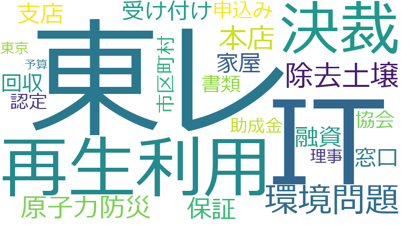

あきもと司

保証、窓口、融資、決裁、認定、協会、環境問題、再生利用、回収、書類、東レ、家屋、理事、IT、予算、助成金、原子力防災、受け付け、市区町村、支店、本店、東京、申込み、除去土壌、プラスチック、中小零細、予約、人材育成、写真、千万、半壊、従業員、感染拡大、新型コロナ、最終処分、枠、直接、福島県、職員、解体、迅速、選挙、雇用調整、飲食店、イベント、ウイルス、万が一、中小企業、事故、事業、代替、代表、国際的、地元、地域、大学、委員会、学園、最初、期待、東京福祉大学、検討会、機能、理事会、留学生、科、簡素化、経営者、経済産業省、緊急事態、講義、避難計画、面接、2、20、CO、FORTRAN、お金、アメリカ、アルファ、コンタクト、サービス業、ショック、スタンフォード、スタート、ディープラーニング、データ、ネット、ハローワーク、バッジ、パリ協定、ビッグデータ、ファースト、フォロー、プラスチックごみ、ホテル、ホームページ、リーマン、一切、世界全体
東レ
2019-04-18 account_balance
…ますけれども、そもそも、このＬ社そのものから私に対して直接依頼じゃなくて、私の友人を通して、Ｌ社というのが、東レも含めて、いわゆる今回記事になっているＯ社との関係の中で事業を遂行する中に、どうやら東レがＯ社に対してともに…
…て、Ｌ社というのが、東レも含めて、いわゆる今回記事になっているＯ社との関係の中で事業を遂行する中に、どうやら東レがＯ社に対してともに共同事業又は連帯というものを行っているという話があり、Ｌ社もＯ社に対しておつき合いを始め…
…うことであったらしいんですが、しかし、結果的に、余りＯ社の対応が悪いということもあり、本当にこのＯ社に対して東レ側がそんなに連帯を含めた関係性が深いのか、それはひょっとしたら、Ｌ社としては、何か被害に、詐欺的なことに巻き…
…ゃないかという不安があるのでということで、知人を通じて私のところに相談してきたものでありますから、私からは、東レの方に、この件で御社が、御社というのは東レ側が、このＬ社とＯ社の関係に対して何か絡みがあるんですかということ…
…知人を通じて私のところに相談してきたものでありますから、私からは、東レの方に、この件で御社が、御社というのは東レ側が、このＬ社とＯ社の関係に対して何か絡みがあるんですかということを確認をさせていただいたということはありま…
…とＯ社の関係に対して何か絡みがあるんですかということを確認をさせていただいたということはあります。その際、東レ側から、東レとしてこれらの会社に対して一切かかわりを持っていませんという回答でございましたので、その旨Ｌ社に…
…に対して何か絡みがあるんですかということを確認をさせていただいたということはあります。その際、東レ側から、東レとしてこれらの会社に対して一切かかわりを持っていませんという回答でございましたので、その旨Ｌ社にお伝えしたと…
IT
2019-11-06 account_balance
…ＡＩというのはなかなか定義が難しいのでありますけれども、日本で一般的にＡＩといいますと、いわゆるＲＰＡ等のＩＴ系とか、そしてまた従来型の機械学習なんかのビッグデータ系、そしてまた最近非常に伸びてきたアルファ碁のようなデ…
…タ系、そしてまた最近非常に伸びてきたアルファ碁のようなディープラーニングがあるというふうに言われております。ＩＴ系だとか、そしてまたビッグデータ系、これは大変重要な分野であることは間違いないのでありますけれども、実はこの…
…またビッグデータ系、これは大変重要な分野であることは間違いないのでありますけれども、実はこの分野、日本が大分ＩＴ化がどっちかというとおくれたということが主であって、世界はどんどんどんどん進んでおり、特にアメリカとか中国な…
…んでおり、特にアメリカとか中国なんかはもうはるか日本の先に走ってしまったということであります。また、一方、ＩＴ化がどんどんと日本で進めば進むほど、残念ながら、日本の多くの企業はアメリカの企業にいわゆるロイヤリティー的な…
…恐らく、今の御答弁を概略すると、ＡＩ人材、ＩＴ人材を幅広く、裾野を広く支援して、それぞれの各専門分野にかかわらず全範囲でこういったデータサイエンスが身につくようなスキルをつけよう、そういった取組であるということが多分今の…
…すけれども、お伺いしたいんです。結局、私がきょう言いたいのは、裾野を広げるということも大事ですし、そして現在ＩＴベンダーも生きていますから、彼らも飯を食っていかなくちゃいけないということはよくわかるんですけれども、どうし…
再生利用
2019-03-19 account_balance
…お答えします。委員御指摘の再生利用に対する実証事業につきましては、この事業の実施に当たりましてまず一番必要なのは、住民の方々の御理解だというふうに思っております。そのため、再生利用に必要な、再生利用に対する、この事業に…
…この事業の実施に当たりましてまず一番必要なのは、住民の方々の御理解だというふうに思っております。そのため、再生利用に必要な、再生利用に対する、この事業に対する必要性、又は放射線に関わる安全性等の丁寧な説明をしながら、当然…
…たりましてまず一番必要なのは、住民の方々の御理解だというふうに思っております。そのため、再生利用に必要な、再生利用に対する、この事業に対する必要性、又は放射線に関わる安全性等の丁寧な説明をしながら、当然、住民の皆さんに寄…
…お答えします。福島県内の除去土壌につきましては、最終処分量を低減するため、除去土壌等の減容、再生利用を進めていく方針をこれまでも閣議決定等でお示しをさせていただいているところでございます。また、今月八日に閣議決定いた…
…ましても、福島県内の除去土壌等の県外最終処分量を低減するため、政府一体となりまして、除去土壌等の減容そして再生利用等取り組む旨示されているところでございます。また、平成二十七年二月に国と福島県及び大熊町、双葉町との間で…
…の間で結びました中間貯蔵施設に関わる安全協定においても、国は、福島県民その他の国民の理解の下に除去土壌等の再生利用の推進に努める旨定められておりますので、我々といたしましては、福島県外最終処分に向けて、引き続き、再生利用…
…再生利用の推進に努める旨定められておりますので、我々といたしましては、福島県外最終処分に向けて、引き続き、再生利用の推進、最終処分の方向性などの検討など、また取組についても着実に進めさせていただきたいと、その思いでありま…
2019-06-11 account_balance
…応させていただきたいという思いであります。そういった中で、環境省として、この中間貯蔵除去土壌等の減容また再生利用技術開発戦略検討会を設置しまして、除去土壌等の減容、再生に係る技術開発の戦略や、また再生利用の促進に係る事…
…壌等の減容また再生利用技術開発戦略検討会を設置しまして、除去土壌等の減容、再生に係る技術開発の戦略や、また再生利用の促進に係る事項等について公開で検討をさせていただいておりまして、私もこの検討会に出席をしながら、これまで…
…て、私もこの検討会に出席をしながら、これまで国会等で御指摘をいただいたことも踏まえて、除去土壌等の減容また再生利用の推進に向けて委員の皆様から忌憚のないこれは御意見をいただくようにお願いしているところでございまして、こう…
…これは御意見をいただくようにお願いしているところでございまして、こういった検討会における議論等も踏まえて、再生利用や福島県外の最終処分の取組に対する国民の皆様の理解を得ていきたいという思いでございますので、様々な情報はし…
決裁
2020-04-06 account_balance
…六千万というのが申込書を見ると枠として書いてあるようでありますけれども、大体五千万ぐらいまでは、いわゆる支店決裁というので、一カ月ぐらいで出るそうなんです。しかし、五千万を超えて極力六千万に近づいていっちゃうとどう言われ…
…しかし、五千万を超えて極力六千万に近づいていっちゃうとどう言われるかというと、これは五千万を超えるときは本店決裁ですから、更にもう一カ月かかります、二カ月かかりますということを大体受け付けをすると窓口で言われて、本当は六…
…窓口で言われて、本当は六千万融資をお願いしたいんだけれどもなと思いながらも、二カ月かかると言われ、また、本店決裁というと何か融資が受けられないのかなという思いもあって、どうやら皆さん、五千万だったら支店決裁ですからといっ…
…れ、また、本店決裁というと何か融資が受けられないのかなという思いもあって、どうやら皆さん、五千万だったら支店決裁ですからといって、その枠でおさめて申し込もうという方がいるということで、私のところにも、これはどうにかならな…
…、これはどうにかならないのかなという声も上がってきたこともございます。よって、なぜ今の、変な話、わずか一千万ぐらいの枠の中で、そんな本店決裁と支店決裁と差をつける必要があるのかということをあえてお伺いしたいと思います。…
…、これはどうにかならないのかなという声も上がってきたこともございます。よって、なぜ今の、変な話、わずか一千万ぐらいの枠の中で、そんな本店決裁と支店決裁と差をつける必要があるのかということをあえてお伺いしたいと思います。…
…も徹底していただきたいと思いますので、これは重ねてお願いを申し上げたいと思います。いずれにしましても、本店決裁と支店決裁、支店の方に審査基準を大分委譲してきたということもあると思います。それはそれで大変評価したいんです…
…いただきたいと思いますので、これは重ねてお願いを申し上げたいと思います。いずれにしましても、本店決裁と支店決裁、支店の方に審査基準を大分委譲してきたということもあると思います。それはそれで大変評価したいんですけれども、…
…たいんですけれども、特に生活関連の関係は五千万と六千万が大体アッパーですから、五千万を超えるとどうしても本店決裁にいかざるを得ないという声もあるので、そこはもっと丁寧にやってあげていただければなと思いますので、よろしくお…
環境問題
2019-11-06 account_balance
…います。さて、本題に移らせていただきたいと思います。きょうは二つです。まず一つはＡＩの分野、もう一つは環境問題について触れさせていただきたいと思います。現在、デジタル社会への対応ということが急務でありまして、今国会…
…った分野も含めて、グローバルで勝てる分野の強化ということをお願いしたいと思います。次に、話題をかえます、環境問題です。きょうは環境省にも来てもらっていただいておりますけれども、今回、大変、台風等で大きな豪雨災害も起き…
…らっしゃるわけでございまして、非常に、これはまさしく気候変動の大きな問題が、そしてまた、言ってみればこれも環境問題そのものであるというふうにも言われております。ですからこそ、日本として、更に環境問題には取り組んでいかなく…
…た、言ってみればこれも環境問題そのものであるというふうにも言われております。ですからこそ、日本として、更に環境問題には取り組んでいかなくちゃいけないだろうと思います。私も、この一年間は政府の一員として、ともに環境省の皆…
…だ知られていない分野というものをしっかりと攻めていただきたいな、そんな思いでございます。その中で、日本の環境問題というのは、特にことし一年で大きくステージが変わったんだと私は思います。それはやはり、パリ協定の批准や、そ…
…いては非常に、海洋プラスチック問題を始め日本がイニシアチブをとって、特に東南アジアの国々も含めて、Ｇ20で環境問題についてともに共同声明等が発表できたということは、私は大きな日本の成果だと思いますし、これは絶対に実施をし…
…いただきたいと思います。そして、大臣に最後お伺いしたいんですが、もう時間もあれなので。要は、これまで、環境問題というと、どうしても日本のメーカー、企業系、ここはもうＣＳＲの部分として使いがちで、それで終わり、そういう…
…て使いがちで、それで終わり、そういう傾向がありました。これからはまさに、経営の中にぐっと取り込んでいって、環境問題というのはよく、釈迦に説法でありますけれども、単なる新たな負担とかコストじゃなくて、この分野を取り込むこと…
除去土壌
2019-03-19 account_balance
…お答えします。福島県内の除去土壌につきましては、最終処分量を低減するため、除去土壌等の減容、再生利用を進めていく方針をこれまでも閣議決定等でお示しをさせていただいているところでございます。また、今月八日に閣議決定いた…
…お答えします。福島県内の除去土壌につきましては、最終処分量を低減するため、除去土壌等の減容、再生利用を進めていく方針をこれまでも閣議決定等でお示しをさせていただいているところでございます。また、今月八日に閣議決定いた…
…月八日に閣議決定いたしました復興・再生期間における東日本大震災からの復興基本方針におきましても、福島県内の除去土壌等の県外最終処分量を低減するため、政府一体となりまして、除去土壌等の減容そして再生利用等取り組む旨示されて…
…らの復興基本方針におきましても、福島県内の除去土壌等の県外最終処分量を低減するため、政府一体となりまして、除去土壌等の減容そして再生利用等取り組む旨示されているところでございます。また、平成二十七年二月に国と福島県及び…
…町、双葉町との間で結びました中間貯蔵施設に関わる安全協定においても、国は、福島県民その他の国民の理解の下に除去土壌等の再生利用の推進に努める旨定められておりますので、我々といたしましては、福島県外最終処分に向けて、引き続…
2019-06-11 account_balance
…ておりますので、まずは、目に見えるところはしっかりと移動する、そのことの思いで、環境省としては、二〇二一年度までに、帰還困難区域を除く除去土壌等の輸送を全て、おおむね完了させるということを目指しているところでございます。…
…また我々もしっかり対応させていただきたいという思いであります。そういった中で、環境省として、この中間貯蔵除去土壌等の減容また再生利用技術開発戦略検討会を設置しまして、除去土壌等の減容、再生に係る技術開発の戦略や、また再…
…そういった中で、環境省として、この中間貯蔵除去土壌等の減容また再生利用技術開発戦略検討会を設置しまして、除去土壌等の減容、再生に係る技術開発の戦略や、また再生利用の促進に係る事項等について公開で検討をさせていただいてお…
…ていただいておりまして、私もこの検討会に出席をしながら、これまで国会等で御指摘をいただいたことも踏まえて、除去土壌等の減容また再生利用の推進に向けて委員の皆様から忌憚のないこれは御意見をいただくようにお願いしているところ…
本店
2020-04-06 account_balance
…す。しかし、五千万を超えて極力六千万に近づいていっちゃうとどう言われるかというと、これは五千万を超えるときは本店決裁ですから、更にもう一カ月かかります、二カ月かかりますということを大体受け付けをすると窓口で言われて、本当…
…ると窓口で言われて、本当は六千万融資をお願いしたいんだけれどもなと思いながらも、二カ月かかると言われ、また、本店決裁というと何か融資が受けられないのかなという思いもあって、どうやら皆さん、五千万だったら支店決裁ですからと…
…、これはどうにかならないのかなという声も上がってきたこともございます。よって、なぜ今の、変な話、わずか一千万ぐらいの枠の中で、そんな本店決裁と支店決裁と差をつける必要があるのかということをあえてお伺いしたいと思います。…
…場にも徹底していただきたいと思いますので、これは重ねてお願いを申し上げたいと思います。いずれにしましても、本店決裁と支店決裁、支店の方に審査基準を大分委譲してきたということもあると思います。それはそれで大変評価したいん…
…価したいんですけれども、特に生活関連の関係は五千万と六千万が大体アッパーですから、五千万を超えるとどうしても本店決裁にいかざるを得ないという声もあるので、そこはもっと丁寧にやってあげていただければなと思いますので、よろし…
原子力防災
2019-03-14 account_balance
…す。その具体化等を進めるに当たりまして、関係自治体のみでは解決が困難な対策等もございます。このため、地域原子力防災協議会を設置しまして、関係各省とも連携し、政府を挙げて、地域防災計画、避難計画の具体化そして充実化に向け…
…援を含め、関係自治体を支援しております。その上で、地域全体の避難計画を含む緊急時対応につきましては、地域原子力防災会議において、原子力規制委員会が策定する原子力防災対策指針等に照らして具体的かつ合理的であることを確認す…
…、地域全体の避難計画を含む緊急時対応につきましては、地域原子力防災会議において、原子力規制委員会が策定する原子力防災対策指針等に照らして具体的かつ合理的であることを確認するとともに、総理を議長とします原子力防災会議で承認…
…む緊急時対応につきましては、地域原子力防災会議において、原子力規制委員会が策定する原子力防災対策指針等に照らして具体的かつ合理的であることを確認するとともに、総理を議長とします原子力防災会議で承認することとしております。…
…の立場は、環境省の外局としての独立性の高い第三条委員会である原子力規制委員会を所管しまして、また、あわせて原子力防災担当副大臣も兼務している立場でございますので、再稼働の是非につきましてはコメントを差し控えさせていただき…
2019-05-29 account_balance
…ざいまして、いずれにしましても、施設職員の理解を得ながら、施設職員の状況等にも配慮をしつつ、避難計画の策定を含む原子力防災体制の具体化、充実化に向け、関係自治体とも連携しながら検討を進めていきたいという思いでございます。…
…私は環境省の外局としての独立性の高い第三者委員会である原子力規制委員会を所管しておりまして、また、原子力防災担当副大臣も兼務している立場でございますので、原子力発電所の再稼働についてのコメントは差し控えさせていただきたい…
…考えております。現在、国として、避難計画の具体化、充実化に向け、ただいま御指摘のある新潟県の柏崎刈羽地域原子力防災協議会の枠組みの下、様々な課題を一つ一つ解決すべき、地域の実情を熟知している関係自治体と一体となって検討…
2019-06-19 account_balance
…す。その上で、今避難計画等のお話がございましたけれども、この地域防災、避難計画につきましては、現在、地域原子力防災会議の枠組みのもと、関係自治体と国が一体となって、地域が抱えるさまざまな課題に対応できるよう着実に検討を…
…し答弁になりますけれども、やはり地域の実情に合わせた、さまざまな課題を一つ一つ解決していく、そのために地域原子力防災会議、これを枠組みとして我々も動かしているところでございますので、やはりこれは、引き続き関係自治体と一体…
…り地域の事情に応じたさまざまな課題を一つ一つ解決していくしかないという思いでございまして、そのために、地域原子力防災協議会をしっかりと機能させていきながら、やはりこれは地域の事情に合わせて関係自治体と一緒になって検討を重…
保証
2020-04-06 account_balance
…ところであるかと思います。その中で、今、いわゆる資金繰り支援をやっていただいておりますけれども、その中でも保証協会部分、セーフティーネット保証ということで、四号とか五号、又は危機関連保証、こういったことが商品としては用…
…中で、今、いわゆる資金繰り支援をやっていただいておりますけれども、その中でも保証協会部分、セーフティーネット保証ということで、四号とか五号、又は危機関連保証、こういったことが商品としては用意されているわけであります。こ…
…いておりますけれども、その中でも保証協会部分、セーフティーネット保証ということで、四号とか五号、又は危機関連保証、こういったことが商品としては用意されているわけであります。これを利用する場合、手続上は、今現在、法律では…
…上は、今現在、法律ではそうなっているわけではありませんが、いわゆる市区町村の認定申請書をまずとって、それから保証協会に要は持ち込む、また民間金融機関に持ち込む、こういったことになっているということなんですけれども、大変混…
…が出るという声を聞きます。言ってみれば、書類さえ持っていけば大体認定の印鑑をくれて、そしてその認定書を持って保証協会に持ち込めるんですけれども、その申請をすることが、今申し込んだって五月はもう無理だというわけです。六月に…
…はいいんですけれども、この認定の書類というのは、あえて今、市区町村に本当に持っていって、認定書をもらってから保証協会へ行くという作業は果たして必要なのかな。要するに、売上げが下がったということによって持っていくんでありま…
…業は果たして必要なのかな。要するに、売上げが下がったということによって持っていくんでありましょうから、それは保証協会に持っていったって、決算書と今現在の直近の売上げを見れば明らかに数字はわかるので、そんなことを、私は、も…
…のこともあわせてお願いしたいと思います。次に、冒頭言ったこととちょっと矛盾するんですけれども、今現在、特に保証協会関連の今回のコロナ対策につきましては、どうしても市区町村の窓口での認定の書類が必要だということになります…
…かの区はうかがい知れるんです。もうこの認定書類をやめるというのであれば、これはこれでよりスピーディーな形で保証協会の審査体制に入れると思うんですが、これをもしやめないというならば、本当に、市区町村の窓口とか受け付け時間…
…来ますと、いわゆる補償とか補填とかこういったものを考えるステージに来たと私は思うんですけれども、このことと、一番最初に冒頭申し上げたいわゆる申請の問題、保証協会と二段階の問題、あわせて大臣の所感をお伺いしたいと思います。…
融資
2020-04-06 account_balance
…すから、先行きどうなのか、本当に事業を続けていいのか、そういった不安がある中で、しかし、さりとて、やはり今は融資をいただいて、その中で事業としての継続、場合によってはしっかり雇用を守っていかなくちゃいけない。そういう面で…
…というわけです。六月になってしまうわけですから、一カ月は待たなくちゃいけないということです。多分、今本当に融資を申し込みたいという方については、ほぼこの新型コロナウイルスの影響を受けて申し込まれる方が大半だと思いますの…
…なるんじゃないかなと私は思いますので、あえて指摘をさせていただきました。次に、もう一つ、無利子とか無担保の融資ということで、日本政策金融公庫が今回、新型コロナウイルス感染症特別貸付というのを制度としてやっていただいてお…
…から、更にもう一カ月かかります、二カ月かかりますということを大体受け付けをすると窓口で言われて、本当は六千万融資をお願いしたいんだけれどもなと思いながらも、二カ月かかると言われ、また、本店決裁というと何か融資が受けられな…
…本当は六千万融資をお願いしたいんだけれどもなと思いながらも、二カ月かかると言われ、また、本店決裁というと何か融資が受けられないのかなという思いもあって、どうやら皆さん、五千万だったら支店決裁ですからといって、その枠でおさ…
…ーをふやしていただいた、休日も返上でというのは大変ありがたい話で、これはこれで本当に感謝申し上げるんですが、融資を申し込みたい企業からすると、やはり電話をした相手の方がどういうふうに反応するかというファーストコンタクトで…
…今回行こうという思いの方もいらっしゃって、そうすると、非常に、まだファーストコンタクトの中で会話をして、さあ融資を受けるか受けないかということを含めてどういうふうにやっていこうという方が多いというふうに聞いております。…
…くちゃいけなく、そして、何度も申し上げますけれども、事業を続けるか続けないかの判断をしなくちゃいけない中で、融資は融資でこれはありがたい話かもしれませんけれども、もう融資ではどうにもならないという、実は足元、来ているんだ…
…いけなく、そして、何度も申し上げますけれども、事業を続けるか続けないかの判断をしなくちゃいけない中で、融資は融資でこれはありがたい話かもしれませんけれども、もう融資ではどうにもならないという、実は足元、来ているんだと思い…
…続けるか続けないかの判断をしなくちゃいけない中で、融資は融資でこれはありがたい話かもしれませんけれども、もう融資ではどうにもならないという、実は足元、来ているんだと思います。そんな中で、一番、特にサービス業なんかは、固…
支店
2020-04-06 account_balance
…大体六千万というのが申込書を見ると枠として書いてあるようでありますけれども、大体五千万ぐらいまでは、いわゆる支店決裁というので、一カ月ぐらいで出るそうなんです。しかし、五千万を超えて極力六千万に近づいていっちゃうとどう言…
…言われ、また、本店決裁というと何か融資が受けられないのかなという思いもあって、どうやら皆さん、五千万だったら支店決裁ですからといって、その枠でおさめて申し込もうという方がいるということで、私のところにも、これはどうにかな…
…、これはどうにかならないのかなという声も上がってきたこともございます。よって、なぜ今の、変な話、わずか一千万ぐらいの枠の中で、そんな本店決裁と支店決裁と差をつける必要があるのかということをあえてお伺いしたいと思います。…
…していただきたいと思いますので、これは重ねてお願いを申し上げたいと思います。いずれにしましても、本店決裁と支店決裁、支店の方に審査基準を大分委譲してきたということもあると思います。それはそれで大変評価したいんですけれど…
…きたいと思いますので、これは重ねてお願いを申し上げたいと思います。いずれにしましても、本店決裁と支店決裁、支店の方に審査基準を大分委譲してきたということもあると思います。それはそれで大変評価したいんですけれども、特に生…
家屋
2019-04-24 account_balance
…環境省といたしましては、今お尋ねのこの半壊家屋につきましては、今現在のところは資産的価値があり廃棄物とは一概に判断できない、そういったことから家屋の解体を補助対象としていないところでございます。しかしながら、過去の例を…
…この半壊家屋につきましては、今現在のところは資産的価値があり廃棄物とは一概に判断できない、そういったことから家屋の解体を補助対象としていないところでございます。しかしながら、過去の例を取りますと、阪神・淡路大震災や東日…
…を取りますと、阪神・淡路大震災や東日本大震災、また熊本大震災や先般のこの七月の豪雨災害のように、被害が甚大で家屋の被害も多数上がり、そして半壊家屋の解体の遅れが被災地の復旧復興の大幅な遅れにつながるおそれがあった場合には…
…日本大震災、また熊本大震災や先般のこの七月の豪雨災害のように、被害が甚大で家屋の被害も多数上がり、そして半壊家屋の解体の遅れが被災地の復旧復興の大幅な遅れにつながるおそれがあった場合には、特例的に財政支援を行っているとこ…
…合には、特例的に財政支援を行っているところでございまして、またあわせて、今回の北海道胆振東部地震における半壊家屋の解体費用に対しましては、市町村の自主的な判断で半壊家屋を解体した場合に、これを支援するために発生する廃材の…
…、またあわせて、今回の北海道胆振東部地震における半壊家屋の解体費用に対しましては、市町村の自主的な判断で半壊家屋を解体した場合に、これを支援するために発生する廃材の運搬や処分について本補助金を対象とさせていただいていると…
受け付け
2020-04-06 account_balance
…体、相談に来る方というのは、とにかく電話がつながらないと。そして、予約もなかなか、いきなり窓口に行ったって受け付けてくれないから、事前に予約をとって行くんだという区もあるようでありますけれども、その予約すらももう五月はま…
…と、これは五千万を超えるときは本店決裁ですから、更にもう一カ月かかります、二カ月かかりますということを大体受け付けをすると窓口で言われて、本当は六千万融資をお願いしたいんだけれどもなと思いながらも、二カ月かかると言われ、…
…長してみたいと思っているんですというのが一般的に問合せをすれば返ってくる答えなんですが、とにかく、五月まで受け付けがいっぱいだと。しかし、区に聞きますと、今までの体制というのは、やはり時間が決まっているということで、大…
…しかし、区に聞きますと、今までの体制というのは、やはり時間が決まっているということで、大体夕方になる前に受け付けが閉まっちゃうということがあって、要するに、実際朝から晩まで受け付けをやっている、面接をしているという状況…
…ているということで、大体夕方になる前に受け付けが閉まっちゃうということがあって、要するに、実際朝から晩まで受け付けをやっている、面接をしているという状況じゃないということが、特に東京なんかの区はうかがい知れるんです。も…
…な形で保証協会の審査体制に入れると思うんですが、これをもしやめないというならば、本当に、市区町村の窓口とか受け付け時間の延長とか人員の配置とか、これをもう少し各自治体に協力してもらわなくちゃいけないと思うんです。今回の…
窓口
2020-04-06 account_balance
…ら、話を聞くと、大体、相談に来る方というのは、とにかく電話がつながらないと。そして、予約もなかなか、いきなり窓口に行ったって受け付けてくれないから、事前に予約をとって行くんだという区もあるようでありますけれども、その予約…
…万を超えるときは本店決裁ですから、更にもう一カ月かかります、二カ月かかりますということを大体受け付けをすると窓口で言われて、本当は六千万融資をお願いしたいんだけれどもなと思いながらも、二カ月かかると言われ、また、本店決裁…
…いなくちゃいかぬというのがあって、十人以下のところはそこまでがちがちなものがなくてもいいというのが、どうやら窓口で言われることらしいんです。しかし、中小企業というのはおもしろいもので、十一人のときもあれば、九人のときも…
…ぜひそれを、本当に更に一層、窓口に来る方のいろいろな声も聞きながら、迅速に対応していただきたいと思います。あわせて、申請後のこの助成金の支給ですね。これは、今まではどうしても二カ月、三カ月かかったというふうに言われてお…
…ょっと矛盾するんですけれども、今現在、特に保証協会関連の今回のコロナ対策につきましては、どうしても市区町村の窓口での認定の書類が必要だということになりますから、皆さんは、私の地元であれば区に殺到するわけであります。これ…
…であります。これも、言い方を、誤解のないようにお伝えすると、区は区で、今までもいろいろな商工業者についての窓口をやっています。うちの区であると、大体午前中二時間、午後二時間の窓口だということなんですけれども、当然、今の…
…で、今までもいろいろな商工業者についての窓口をやっています。うちの区であると、大体午前中二時間、午後二時間の窓口だということなんですけれども、当然、今の状況では、どっと人が来るのでそれじゃ間に合わないということが予想され…
…いということが予想されて、区に聞きますと、いよいよ、余りにも体制が間に合わないので、来週ぐらいからはちょっと窓口と人数もふやして、時間も延長してみたいと思っているんですというのが一般的に問合せをすれば返ってくる答えなんで…
…ピーディーな形で保証協会の審査体制に入れると思うんですが、これをもしやめないというならば、本当に、市区町村の窓口とか受け付け時間の延長とか人員の配置とか、これをもう少し各自治体に協力してもらわなくちゃいけないと思うんです…
…零細企業にとっては今が大事なものですから、その今をどうフォローしてあげるか、大変なポイントだと思いますので、窓口業務が閉まっていればもうそこから先に進めないというのが現状だと思いますので、よろしくお願いしたいと思います。…
回収
2019-03-14 account_balance
…御指摘をいただきましたように、付加価値の高いリサイクルを進めていくためには、やはりこのきめ細かい分別回収を推進する必要があると考えております。環境省では、今委員からいろいろと御指摘いただいていましたように、分別回収の促…
…を推進する必要があると考えております。環境省では、今委員からいろいろと御指摘いただいていましたように、分別回収の促進に向けた支援策として、コンビニ、この店頭でのペットボトルの回収に対して電子ポイントを付与するという、こ…
…ろと御指摘いただいていましたように、分別回収の促進に向けた支援策として、コンビニ、この店頭でのペットボトルの回収に対して電子ポイントを付与するという、これはモデル事業として実施させていただいております。今後、このプラス…
…するという、これはモデル事業として実施させていただいております。今後、このプラスチック資源循環戦略案では、回収拠点の整備や、また店頭回収、拠点回収の推進のほか、最新のＩｏＴ技術も活用しました、より回収が進む方法を幅広く…
…業として実施させていただいております。今後、このプラスチック資源循環戦略案では、回収拠点の整備や、また店頭回収、拠点回収の推進のほか、最新のＩｏＴ技術も活用しました、より回収が進む方法を幅広く検討していくことが盛り込ま…
…施させていただいております。今後、このプラスチック資源循環戦略案では、回収拠点の整備や、また店頭回収、拠点回収の推進のほか、最新のＩｏＴ技術も活用しました、より回収が進む方法を幅広く検討していくことが盛り込まれておりま…
…源循環戦略案では、回収拠点の整備や、また店頭回収、拠点回収の推進のほか、最新のＩｏＴ技術も活用しました、より回収が進む方法を幅広く検討していくことが盛り込まれておりますので、今後また六月のＧ20に向けても、政府として、プ…
申込み
2020-04-06 account_balance
…分の思いとして、とにかく行きたいというふうに言ったとしても、予約がまずとれない。そしてまた、この期間に初めて申込みをする方というのは、役所に行くこともなれていない方も結構いらっしゃるということもあって、電話がつながらない…
…ていただいております。大体これは今、郵送でも直接行ってもいいということでありましょうけれども、郵送であれば、申込みをすれば大体二週間前後で面接の時間が返ってきて、そして面接をすれば大体一カ月ぐらいで結果が出るということで…
…は多いもので、そういう皆さんの声を聞きますと、実は、雇用計画なんかは事後の形でいいんでしょうけれども、最初に申込みをする際には、これは私も今回聞いて初めてわかった話なんですが、従業員が十人以上のところについては、いわゆる…
…の段階でこういったハードルがあるとなかなかやりにくいということなので、こういったことも含めて、まずはちゃんと申込みをさせてもらって、その後にいろいろとチェックをするということで入っていかないと、申込みもできなければ先に進…
…含めて、まずはちゃんと申込みをさせてもらって、その後にいろいろとチェックをするということで入っていかないと、申込みもできなければ先に進めないという、そういったこともあるようでございます。その辺を含めて、ぜひもう少し、そ…
市区町村
2020-04-06 account_balance
…けであります。これを利用する場合、手続上は、今現在、法律ではそうなっているわけではありませんが、いわゆる市区町村の認定申請書をまずとって、それから保証協会に要は持ち込む、また民間金融機関に持ち込む、こういったことになっ…
…今お話があったように、極力簡素化を目指していくとか、そしてまた市区町村にいろいろと促していますという回答をいただいたんですけれども、実際の現場は、今私が申し上げましたように、このいわゆる自粛ムードというのが三月ぐらいから…
…、答弁は一番最後にやってもらおうと思いますので今はいいんですけれども、この認定の書類というのは、あえて今、市区町村に本当に持っていって、認定書をもらってから保証協会へ行くという作業は果たして必要なのかな。要するに、売上げ…
…こととちょっと矛盾するんですけれども、今現在、特に保証協会関連の今回のコロナ対策につきましては、どうしても市区町村の窓口での認定の書類が必要だということになりますから、皆さんは、私の地元であれば区に殺到するわけであります…
…でよりスピーディーな形で保証協会の審査体制に入れると思うんですが、これをもしやめないというならば、本当に、市区町村の窓口とか受け付け時間の延長とか人員の配置とか、これをもう少し各自治体に協力してもらわなくちゃいけないと思…
協会
2020-04-06 account_balance
…ろであるかと思います。その中で、今、いわゆる資金繰り支援をやっていただいておりますけれども、その中でも保証協会部分、セーフティーネット保証ということで、四号とか五号、又は危機関連保証、こういったことが商品としては用意さ…
…、今現在、法律ではそうなっているわけではありませんが、いわゆる市区町村の認定申請書をまずとって、それから保証協会に要は持ち込む、また民間金融機関に持ち込む、こういったことになっているということなんですけれども、大変混み合…
…るという声を聞きます。言ってみれば、書類さえ持っていけば大体認定の印鑑をくれて、そしてその認定書を持って保証協会に持ち込めるんですけれども、その申請をすることが、今申し込んだって五月はもう無理だというわけです。六月になっ…
…いんですけれども、この認定の書類というのは、あえて今、市区町村に本当に持っていって、認定書をもらってから保証協会へ行くという作業は果たして必要なのかな。要するに、売上げが下がったということによって持っていくんでありましょ…
…果たして必要なのかな。要するに、売上げが下がったということによって持っていくんでありましょうから、それは保証協会に持っていったって、決算書と今現在の直近の売上げを見れば明らかに数字はわかるので、そんなことを、私は、もう日…
…ともあわせてお願いしたいと思います。次に、冒頭言ったこととちょっと矛盾するんですけれども、今現在、特に保証協会関連の今回のコロナ対策につきましては、どうしても市区町村の窓口での認定の書類が必要だということになりますから…
…区はうかがい知れるんです。もうこの認定書類をやめるというのであれば、これはこれでよりスピーディーな形で保証協会の審査体制に入れると思うんですが、これをもしやめないというならば、本当に、市区町村の窓口とか受け付け時間の延…
…来ますと、いわゆる補償とか補填とかこういったものを考えるステージに来たと私は思うんですけれども、このことと、一番最初に冒頭申し上げたいわゆる申請の問題、保証協会と二段階の問題、あわせて大臣の所感をお伺いしたいと思います。…
書類
2020-04-06 account_balance
…、東京であれば区に申請書を出しさえすれば、これは比較的早く今回は申請が出るという声を聞きます。言ってみれば、書類さえ持っていけば大体認定の印鑑をくれて、そしてその認定書を持って保証協会に持ち込めるんですけれども、その申請…
…ます。私は、きょうは大臣に、答弁は一番最後にやってもらおうと思いますので今はいいんですけれども、この認定の書類というのは、あえて今、市区町村に本当に持っていって、認定書をもらってから保証協会へ行くという作業は果たして必…
…そんなことを、私は、もう日本全国、今、緊急事態宣言も出されようという、そういった昨今において、あえてこの認定書類は必要なのかなということは思わざるを得ないんです。それはもう一度役所で検討していただきたい、政府として検討…
…、じゃ、これは制度があるからと喜んでいわゆるハローワークに行かれた方なんですけれども、やはり大変なんですね、書類が。本当に大変だと思います。ですから、今でも、いわゆる添付書類だとかそういったものを少し簡素化するというこ…
…た方なんですけれども、やはり大変なんですね、書類が。本当に大変だと思います。ですから、今でも、いわゆる添付書類だとかそういったものを少し簡素化するということをやっていただいたり、特に雇用計画なんかは事後でもいいですよと…
…んですけれども、今現在、特に保証協会関連の今回のコロナ対策につきましては、どうしても市区町村の窓口での認定の書類が必要だということになりますから、皆さんは、私の地元であれば区に殺到するわけであります。これも、言い方を、…
…いる、面接をしているという状況じゃないということが、特に東京なんかの区はうかがい知れるんです。もうこの認定書類をやめるというのであれば、これはこれでよりスピーディーな形で保証協会の審査体制に入れると思うんですが、これを…
認定
2020-04-06 account_balance
…ます。これを利用する場合、手続上は、今現在、法律ではそうなっているわけではありませんが、いわゆる市区町村の認定申請書をまずとって、それから保証協会に要は持ち込む、また民間金融機関に持ち込む、こういったことになっていると…
…んと。六月に入ってどうなのかなという現状があるわけであります。改めて、こういった状況下であれば、今さらこの認定申請書というのが本当に要るのかなという疑問が出てくるわけでありますけれども、その辺の運用について経済産業省は…
…を出しさえすれば、これは比較的早く今回は申請が出るという声を聞きます。言ってみれば、書類さえ持っていけば大体認定の印鑑をくれて、そしてその認定書を持って保証協会に持ち込めるんですけれども、その申請をすることが、今申し込ん…
…早く今回は申請が出るという声を聞きます。言ってみれば、書類さえ持っていけば大体認定の印鑑をくれて、そしてその認定書を持って保証協会に持ち込めるんですけれども、その申請をすることが、今申し込んだって五月はもう無理だというわ…
…であります。私は、きょうは大臣に、答弁は一番最後にやってもらおうと思いますので今はいいんですけれども、この認定の書類というのは、あえて今、市区町村に本当に持っていって、認定書をもらってから保証協会へ行くという作業は果た…
…おうと思いますので今はいいんですけれども、この認定の書類というのは、あえて今、市区町村に本当に持っていって、認定書をもらってから保証協会へ行くという作業は果たして必要なのかな。要するに、売上げが下がったということによって…
…で、そんなことを、私は、もう日本全国、今、緊急事態宣言も出されようという、そういった昨今において、あえてこの認定書類は必要なのかなということは思わざるを得ないんです。それはもう一度役所で検討していただきたい、政府として…
…盾するんですけれども、今現在、特に保証協会関連の今回のコロナ対策につきましては、どうしても市区町村の窓口での認定の書類が必要だということになりますから、皆さんは、私の地元であれば区に殺到するわけであります。これも、言い…
…っている、面接をしているという状況じゃないということが、特に東京なんかの区はうかがい知れるんです。もうこの認定書類をやめるというのであれば、これはこれでよりスピーディーな形で保証協会の審査体制に入れると思うんですが、こ…
助成金
2020-04-06 account_balance
…、よろしくお願いしたいと思います。次に、雇用関連に移らせていただきたいと思いますが、この雇用関連、雇用調整助成金の特別措置をやっていただいている、これはこれで本当に、雇用維持をしていく企業にとっては大変ありがたい制度で…
…ネットなんかで見ると、日本は全然雇用の助成はないんだなんということを書かれているネットもあって、この雇用調整助成金というのは実は余り知られていなくて、特に、企業でも、中堅どころでやっている企業の経営者と話をしても、いやあ…
…企業の経営者と話をしても、いやあ、社員をどうしようか迷っているんだよねなんて声を聞くんですけれども、雇用調整助成金をやればいいじゃないですかと言うと、えっ、そんなのあったのという、私、これは意外に浸透していなかったんだな…
…うことを実は今回感じました。少なくとも、私が接した経営者の方、十人のうち本当に五人、半分ぐらいがこの雇用調整助成金のことを余り知られていないというのがありまして、もっともっとこれは周知徹底しなくちゃいかぬのかなということ…
…一層、窓口に来る方のいろいろな声も聞きながら、迅速に対応していただきたいと思います。あわせて、申請後のこの助成金の支給ですね。これは、今まではどうしても二カ月、三カ月かかったというふうに言われておりますので、これにつき…
理事
2019-04-04 account_balance
…の御質問なので幾つかお答えをさせていただきたいと思います。まず、私自身がこの学校法人茶屋四郎次郎記念学園の理事に就任したのが、今御指摘のとおり、二〇一四年四月から二〇一七年の七月までであります。そして、理事報酬を、この…
…郎記念学園の理事に就任したのが、今御指摘のとおり、二〇一四年四月から二〇一七年の七月までであります。そして、理事報酬を、この間は御指摘のように理事報酬を得ておりましたけれども、副大臣に就任したこともありまして、就任直後か…
…御指摘のとおり、二〇一四年四月から二〇一七年の七月までであります。そして、理事報酬を、この間は御指摘のように理事報酬を得ておりましたけれども、副大臣に就任したこともありまして、就任直後からはもう既に理事報酬も辞退し、また…
…間は御指摘のように理事報酬を得ておりましたけれども、副大臣に就任したこともありまして、就任直後からはもう既に理事報酬も辞退し、また理事会への出席、また理事活動というのは一切停止をさせていただいたというところでございます。…
…報酬を得ておりましたけれども、副大臣に就任したこともありまして、就任直後からはもう既に理事報酬も辞退し、また理事会への出席、また理事活動というのは一切停止をさせていただいたというところでございます。政治献金ということで…
…けれども、副大臣に就任したこともありまして、就任直後からはもう既に理事報酬も辞退し、また理事会への出席、また理事活動というのは一切停止をさせていただいたというところでございます。政治献金ということでございますけれども、…
…に、そのもう当時の学校関係者じゃなくなった中島さん個人からは、多分陣中見舞いという形で選挙直前に政治献金という形で資金提供があったことは事実だと思います。理事の報酬につきましては、大体月九万六千円程度だったと思います。…
理事報酬としてはそのとおりだと思います。
…う機会をいただいたということもございまして、そこでの現場経験もあるから、その後、ただ学校を去るだけじゃなくて理事としてひとつ受けてくれないかという御相談がありましたので、まあ、私は非常勤であるならば私のできる範囲でのアド…
…だけじゃなくて理事としてひとつ受けてくれないかという御相談がありましたので、まあ、私は非常勤であるならば私のできる範囲でのアドバイス活動はいたしましょうということの中で理事を受けさせていただいたというのが事実であります。…
…お答えしますけれども、私は確かに理事としての立場はありましたけれども、その東京福祉大学が経営を行う際に、その外国人留学生をそこまで拡大をしている云々は、実は私のところには理事会も通じて報告がなかったものでありますから、実…
…れども、その東京福祉大学が経営を行う際に、その外国人留学生をそこまで拡大をしている云々は、実は私のところには理事会も通じて報告がなかったものでありますから、実際、この福祉大学がその留学生に対する拡大を何かするということに…
…、それとこの東京福祉大学が今日のように行っていることとは別問題でございまして、私自身が、東京福祉大学の例えば理事会等にこういったことをやるべきであるだとか、そして大学からこのようなビジネスをすることに対する報告があってそ…
2019-04-02 account_balance
…ますから、私のプライベートのことでございますけれども、幾分お答えをさせていただきたいと思います。まず、私が理事に就任をしましたのは、二〇一四年の四月に、この学校法人の茶屋四郎次郎記念学園の理事に就任をいたしました。しか…
…いと思います。まず、私が理事に就任をしましたのは、二〇一四年の四月に、この学校法人の茶屋四郎次郎記念学園の理事に就任をいたしました。しかし、二〇一七年の八月に国交副大臣に拝命いただきましたので、もう理事としての職務を執…
…郎次郎記念学園の理事に就任をいたしました。しかし、二〇一七年の八月に国交副大臣に拝命いただきましたので、もう理事としての職務を執行せず、休止をさせていただきましたから、学園の運営等には関与しておりません、以後は。そして…
…ただきましたから、学園の運営等には関与しておりません、以後は。そしてまた今現在においては、三月をもってこの理事を辞任させていただいておりますので、御確認をいただきたいと思います。また、あわせて、理事報酬の件でございま…
…、三月をもってこの理事を辞任させていただいておりますので、御確認をいただきたいと思います。また、あわせて、理事報酬の件でございますけれども、これにつきましても、副大臣在任中は理事報酬は辞退をさせていただいておりますので…
…ただきたいと思います。また、あわせて、理事報酬の件でございますけれども、これにつきましても、副大臣在任中は理事報酬は辞退をさせていただいておりますので、一切いただいていないということであります。また、学園等からの政治…
東京
2020-04-06 account_balance
…上げるまでもなく、新型コロナウイルスの感染拡大の影響、本当に大変な状況となってまいりました。昨日、私は地元は東京でございますけれども、一日の感染者数が百四十三名となったこともございまして、いよいよ三桁台に突入した。これに…
…持ち込む、こういったことになっているということなんですけれども、大変混み合っているというのが今の現状で、特に東京なんかは、恐らく港区とか中央区とか、ここも飲食店が多いところでありましょうから、話を聞くと、大体、相談に来る…
…する思いでこの制度を利用したいという方が結構いらっしゃいます。しかしながら、今申し上げたように、なかなか、東京であれば区に申請書を出しさえすれば、これは比較的早く今回は申請が出るという声を聞きます。言ってみれば、書類さ…
…があって、要するに、実際朝から晩まで受け付けをやっている、面接をしているという状況じゃないということが、特に東京なんかの区はうかがい知れるんです。もうこの認定書類をやめるというのであれば、これはこれでよりスピーディーな…
…。今回のこの緊急事態でありますから、当然それは地元地元で自治体が判断することであると思いますけれども、特に東京の場合はこんな状況なので、これは総務省として、ぴしっともう少し体制の強化ということを伝えてもらいたいと思うん…
予算
2019-11-06 account_balance
…きていますから、彼らも飯を食っていかなくちゃいけないということはよくわかるんですけれども、どうしても、日本の予算の組み方になりますと、従来のスパコンとか、そしてまたデータベース等の、そっちに予算の中心が行ってしまっている…
…れども、どうしても、日本の予算の組み方になりますと、従来のスパコンとか、そしてまたデータベース等の、そっちに予算の中心が行ってしまっているという現状があって、やはり新しい分野にぐっと予算が行きづらい環境になっているんじゃ…
…してまたデータベース等の、そっちに予算の中心が行ってしまっているという現状があって、やはり新しい分野にぐっと予算が行きづらい環境になっているんじゃないのかなと思うので、ちょっと私の今の質問の関連につきまして、大臣としての…
…すので、ぜひ、経済産業省として、この新たな分野への挑戦、そして日本が勝てる分野、ここをしっかりと見きわめて、予算の配分等を引き続きやっていただきたいと思います。とかく、今後、画像認識の知覚ＡＩとか、そしてまた自動運転等…
…も、ただ、何か、どちらかと言うと自己満で終わっている、そういう形が否めないんです。ですから、私は、エネ特の予算も環境省が絡めば広く使える、こういった技術的な面もありますけれども、もっともっと他省庁、経済産業省関連の団体…
2020-04-06 account_balance
…。ぜひ、今年度、次年度を含めて、こういったことが起こらないようにしっかりと監督していただきながら、決められた予算がいい形で使われていただきますことを心から願うばかりでありますので、よろしくお願いしたいと思います。さて、…
プラスチック
2019-02-27 account_balance
…お答えいたします。今、海洋プラスチック憲章のお話をいただいたところでございますが、国際的によく引用されている研究によれば、Ｇ７各国から海に流出するプラスチック量は世界全体の二％程度と推計されております。海洋プラスチッ…
…のお話をいただいたところでございますが、国際的によく引用されている研究によれば、Ｇ７各国から海に流出するプラスチック量は世界全体の二％程度と推計されております。海洋プラスチックごみ、この問題の解決には、Ｇ20のような先…
…いる研究によれば、Ｇ７各国から海に流出するプラスチック量は世界全体の二％程度と推計されております。海洋プラスチックごみ、この問題の解決には、Ｇ20のような先進国だけじゃなくて、プラスチックごみをよく、多く排出する途上国…
…度と推計されております。海洋プラスチックごみ、この問題の解決には、Ｇ20のような先進国だけじゃなくて、プラスチックごみをよく、多く排出する途上国も含めた世界全体の取組が必要不可欠だというふうに思っております。日本とし…
…で、スリーＲの考え方に基づいて、国内法の整備を整え、技術を磨き、循環型社会を築いてきました。今後策定するプラスチック資源循環戦略でも、海洋プラスチック憲章を包含するような総合的かつ先進的な内容を盛り込み、積極的に取り組む…
…内法の整備を整え、技術を磨き、循環型社会を築いてきました。今後策定するプラスチック資源循環戦略でも、海洋プラスチック憲章を包含するような総合的かつ先進的な内容を盛り込み、積極的に取り組む考え方でございまして、現在も、環境…
…を包含するような総合的かつ先進的な内容を盛り込み、積極的に取り組む考え方でございまして、現在も、環境省、プラスチックとどのように賢くつき合っていくかということの中で、プラスチック・スマートという運動、キャンペーンも行って…
…組む考え方でございまして、現在も、環境省、プラスチックとどのように賢くつき合っていくかということの中で、プラスチック・スマートという運動、キャンペーンも行っているところでございます。さらに、重要なことは、我が国の経験と…
2019-11-06 account_balance
…ったんだと私は思います。それはやはり、パリ協定の批准や、そしてまた我が国で開催したＧ20、これによって、プラスチック問題については非常に、海洋プラスチック問題を始め日本がイニシアチブをとって、特に東南アジアの国々も含めて…
…パリ協定の批准や、そしてまた我が国で開催したＧ20、これによって、プラスチック問題については非常に、海洋プラスチック問題を始め日本がイニシアチブをとって、特に東南アジアの国々も含めて、Ｇ20で環境問題についてともに共同声…
…年までに八割、すごい数字ですよね、これはもう野心的な数字と言っても過言ではないと思います。そしてまた、プラスチックにつきましても、プラスチックの代替、これは二〇三〇年までに代替品として二百万トンを目指すという、これもす…
…よね、これはもう野心的な数字と言っても過言ではないと思います。そしてまた、プラスチックにつきましても、プラスチックの代替、これは二〇三〇年までに代替品として二百万トンを目指すという、これもすごい量ですよ。しかし、それを…
…して、どんどん皆さんの事業というものをアピールをする、そんなこともやってもらいたいと思っておりますけれども、いずれにしましても、ＣＯ2の削減やプラスチック代替品など、政府の取組を、まずは環境省からお願いしたいと思います。…
…いらっしゃるんですけれども、これは町に行くとほとんどこのバッジの意味は知りません。そしてなおかつ、海洋プラスチック問題。これは、海に関係するそういった皆さんは全て意識を高く持ってもらわなくちゃいけないわけでありますけれ…
…ども、例えば私も、過去、国交副大臣もやらせていただいて、海洋事業者のいろいろな会に行きますけれども、海洋プラスチックと言うと、みんなぽかんという、これが現状なんですね。ですから、もっともっといろいろなところに出向いていっ…
2019-03-14 account_balance
…収に対して電子ポイントを付与するという、これはモデル事業として実施させていただいております。今後、このプラスチック資源循環戦略案では、回収拠点の整備や、また店頭回収、拠点回収の推進のほか、最新のＩｏＴ技術も活用しました…
…進む方法を幅広く検討していくことが盛り込まれておりますので、今後また六月のＧ20に向けても、政府として、プラスチック資源循環戦略を策定して、戦略に基づく施策を速やかに進めてまいりたいと思っております。今いただいた案とい…
中小零細
2020-04-06 account_balance
…うに、このいわゆる自粛ムードというのが三月ぐらいからスタートして、そして四月、今の状況でありますから、特に中小零細企業にとっては先が見えないという中で、どちらかというと、今、事業を本当に継続できるのかどうか。お金を借りた…
…いと、申込みもできなければ先に進めないという、そういったこともあるようでございます。その辺を含めて、ぜひもう少し、そういった特に中小零細企業への配慮というものは何かないのかなと思うんですけれども、厚労省、いかがですか。…
…ぜひその辺も含めて、更に一層フォローしていただきたいと思います。とにかく、中小零細企業にとっては今が大事なものですから、その今をどうフォローしてあげるか、大変なポイントだと思いますので、窓口業務が閉まっていればもうそこか…
…たいと思います。それで、最後に、大臣には総合してお伺いしたいんですけれども、今回の新型コロナの影響、特に中小零細企業にとっての打撃というのは、もう私が申し上げるまでもなく、現場でいろいろな声を聞いていらっしゃると思いま…
予約
2020-04-06 account_balance
…いところでありましょうから、話を聞くと、大体、相談に来る方というのは、とにかく電話がつながらないと。そして、予約もなかなか、いきなり窓口に行ったって受け付けてくれないから、事前に予約をとって行くんだという区もあるようであ…
…とにかく電話がつながらないと。そして、予約もなかなか、いきなり窓口に行ったって受け付けてくれないから、事前に予約をとって行くんだという区もあるようでありますけれども、その予約すらももう五月はまず入りませんと。六月に入って…
…窓口に行ったって受け付けてくれないから、事前に予約をとって行くんだという区もあるようでありますけれども、その予約すらももう五月はまず入りませんと。六月に入ってどうなのかなという現状があるわけであります。改めて、こういっ…
…イトなんかでやっているようなところについては、自分の思いとして、とにかく行きたいというふうに言ったとしても、予約がまずとれない。そしてまた、この期間に初めて申込みをする方というのは、役所に行くこともなれていない方も結構い…
人材育成
2019-11-06 account_balance
…いく、そしてその支援体制というのをつくっていかなくちゃいけない、その思いでございまして、そのためにはやはり人材育成というのはもう必要不可欠で、これは欠かせないんです。しかし、ちょっと人材育成が日本じゃまだ支援体制が弱いん…
…ざいまして、そのためにはやはり人材育成というのはもう必要不可欠で、これは欠かせないんです。しかし、ちょっと人材育成が日本じゃまだ支援体制が弱いんじゃないかなという声があるのもまた事実でございまして。ここでお伺いしたいん…
…あるのもまた事実でございまして。ここでお伺いしたいんですけれども、きょうは文科省にもお越しいただいておりますが、このＡＩ分野、大学での人材育成について、今の体制、どのようになっていらっしゃるか、お伺いしたいと思います。…
…いますけれども、そこは、副学長等、新しい制度をつくったと思いますので、そういったことを含めて、日本でのいい人材育成について更に進むように私は期待したいと思いますので、よろしくお願いをしたいと思います。そして、きょうは大…
写真
2019-05-23 account_balance
…ということはありませんし、これまでもやってきたことはございません。そして、今、私も、いただいたこのもので、写真が、私の、何ですか、この副大臣室で写真が写っているのがあるんですけど、ここに写っている方は、本人、個人の名誉…
…ってきたことはございません。そして、今、私も、いただいたこのもので、写真が、私の、何ですか、この副大臣室で写真が写っているのがあるんですけど、ここに写っている方は、本人、個人の名誉のことがあるので余り名前は申し上げませ…
…ざいまして、たまたまその方がホームページに載っけただけであって、これの多分関連と、このホームページの、フェイスブックの写真とは全く当てはまらない人物なので、この写真自体がいかがなものかと、そのように思うところであります。…
…ざいまして、たまたまその方がホームページに載っけただけであって、これの多分関連と、このホームページの、フェイスブックの写真とは全く当てはまらない人物なので、この写真自体がいかがなものかと、そのように思うところであります。…
千万
2020-04-06 account_balance
…たい制度であるということは聞くんですけれども。実は、特に飲食店を含む生活環境系は今、この特別枠として大体六千万というのが申込書を見ると枠として書いてあるようでありますけれども、大体五千万ぐらいまでは、いわゆる支店決裁と…
…境系は今、この特別枠として大体六千万というのが申込書を見ると枠として書いてあるようでありますけれども、大体五千万ぐらいまでは、いわゆる支店決裁というので、一カ月ぐらいで出るそうなんです。しかし、五千万を超えて極力六千万に…
…ますけれども、大体五千万ぐらいまでは、いわゆる支店決裁というので、一カ月ぐらいで出るそうなんです。しかし、五千万を超えて極力六千万に近づいていっちゃうとどう言われるかというと、これは五千万を超えるときは本店決裁ですから、…
…五千万ぐらいまでは、いわゆる支店決裁というので、一カ月ぐらいで出るそうなんです。しかし、五千万を超えて極力六千万に近づいていっちゃうとどう言われるかというと、これは五千万を超えるときは本店決裁ですから、更にもう一カ月かか…
…いで出るそうなんです。しかし、五千万を超えて極力六千万に近づいていっちゃうとどう言われるかというと、これは五千万を超えるときは本店決裁ですから、更にもう一カ月かかります、二カ月かかりますということを大体受け付けをすると窓…
…ですから、更にもう一カ月かかります、二カ月かかりますということを大体受け付けをすると窓口で言われて、本当は六千万融資をお願いしたいんだけれどもなと思いながらも、二カ月かかると言われ、また、本店決裁というと何か融資が受けら…
…カ月かかると言われ、また、本店決裁というと何か融資が受けられないのかなという思いもあって、どうやら皆さん、五千万だったら支店決裁ですからといって、その枠でおさめて申し込もうという方がいるということで、私のところにも、これ…
…も、これはどうにかならないのかなという声も上がってきたこともございます。よって、なぜ今の、変な話、わずか一千万ぐらいの枠の中で、そんな本店決裁と支店決裁と差をつける必要があるのかということをあえてお伺いしたいと思います…
…大分委譲してきたということもあると思います。それはそれで大変評価したいんですけれども、特に生活関連の関係は五千万と六千万が大体アッパーですから、五千万を超えるとどうしても本店決裁にいかざるを得ないという声もあるので、そこ…
…してきたということもあると思います。それはそれで大変評価したいんですけれども、特に生活関連の関係は五千万と六千万が大体アッパーですから、五千万を超えるとどうしても本店決裁にいかざるを得ないという声もあるので、そこはもっと…
…ます。それはそれで大変評価したいんですけれども、特に生活関連の関係は五千万と六千万が大体アッパーですから、五千万を超えるとどうしても本店決裁にいかざるを得ないという声もあるので、そこはもっと丁寧にやってあげていただければ…
半壊
2019-04-24 account_balance
…環境省といたしましては、今お尋ねのこの半壊家屋につきましては、今現在のところは資産的価値があり廃棄物とは一概に判断できない、そういったことから家屋の解体を補助対象としていないところでございます。しかしながら、過去の例を…
…や東日本大震災、また熊本大震災や先般のこの七月の豪雨災害のように、被害が甚大で家屋の被害も多数上がり、そして半壊家屋の解体の遅れが被災地の復旧復興の大幅な遅れにつながるおそれがあった場合には、特例的に財政支援を行っている…
…た場合には、特例的に財政支援を行っているところでございまして、またあわせて、今回の北海道胆振東部地震における半壊家屋の解体費用に対しましては、市町村の自主的な判断で半壊家屋を解体した場合に、これを支援するために発生する廃…
…して、またあわせて、今回の北海道胆振東部地震における半壊家屋の解体費用に対しましては、市町村の自主的な判断で半壊家屋を解体した場合に、これを支援するために発生する廃材の運搬や処分について本補助金を対象とさせていただいてい…
従業員
2020-04-06 account_balance
…もうやっていただいている。これはこれで本当にありがたい話だと思うんですけれども、大体、我々に相談に来る方は、従業員が十人より上か下ぐらいでやっている方が地元は多いもので、そういう皆さんの声を聞きますと、実は、雇用計画なん…
…事後の形でいいんでしょうけれども、最初に申込みをする際には、これは私も今回聞いて初めてわかった話なんですが、従業員が十人以上のところについては、いわゆる就業規則と給与規程なるもの、そういったものがしっかりと取り決められて…
…中で代表役員というのを一人選出してもらって、その選出した方がちゃんと代表役員だということになるために、全ての従業員に判こ、捺印をしてもらって、そしてそれをつくって提出するという、それが実はハローワークの入り口になっている…
…いうことで、会社をもう、会社といいますか、飲食店も含めて、お店も含めて一旦クローズしたというところについては従業員の皆さんをかき集めるのが実は大変だということもあって、最初の入り口の段階でこういったハードルがあるとなかな…
感染拡大
2020-04-06 account_balance
…た点で幾つか質問をさせていただきたいと思います。現在、もう私が申し上げるまでもなく、新型コロナウイルスの感染拡大の影響、本当に大変な状況となってまいりました。昨日、私は地元は東京でございますけれども、一日の感染者数が百…
…ということで、改めて、そういった民間のホテル業に携わる皆様にも感謝申し上げたいと思います。とにかく、今は感染拡大をいかに防ぐかということになりますので、いわゆる三つの密をしっかりと自粛してもらうと同時に、不要不急の外出…
…とになりますので、いわゆる三つの密をしっかりと自粛してもらうと同時に、不要不急の外出、これは一番やはりこの感染拡大については効果的であるな、私もそのように思いますので、これをしっかり守ることによって命をしっかり守る、国民…
…だということでありますが、やはりこれは、今、人の命を守るという観点であれば、閉めるべきものは閉めて、そして感染拡大を防ぐということに対しても、ある意味、商売をしている皆さんにもお願いをしていかなくちゃいけない、そういった…
新型コロナ
2020-04-06 account_balance
…いただきますことを心から願うばかりでありますので、よろしくお願いしたいと思います。さて、きょうは、やはり新型コロナウイルス関連の質問を、また、それから派生する経済への影響、そういった点で幾つか質問をさせていただきたいと…
…済への影響、そういった点で幾つか質問をさせていただきたいと思います。現在、もう私が申し上げるまでもなく、新型コロナウイルスの感染拡大の影響、本当に大変な状況となってまいりました。昨日、私は地元は東京でございますけれども…
…機でございましたから、影響というのがどちらかというとじわじわじわと来たという感じでありますけれども、今回の新型コロナウイルスの影響というのは、人の移動が完全に制限されますから、特に飲食業とか観光業、こういったものを代表す…
…一カ月は待たなくちゃいけないということです。多分、今本当に融資を申し込みたいという方については、ほぼこの新型コロナウイルスの影響を受けて申し込まれる方が大半だと思いますので、とかく零細企業で、一人で飲食店、ないし一人か…
…指摘をさせていただきました。次に、もう一つ、無利子とか無担保の融資ということで、日本政策金融公庫が今回、新型コロナウイルス感染症特別貸付というのを制度としてやっていただいております。大体これは今、郵送でも直接行ってもい…
…ので、よろしくお願いしたいと思います。それで、最後に、大臣には総合してお伺いしたいんですけれども、今回の新型コロナの影響、特に中小零細企業にとっての打撃というのは、もう私が申し上げるまでもなく、現場でいろいろな声を聞い…
最終処分
2019-03-19 account_balance
…お答えします。福島県内の除去土壌につきましては、最終処分量を低減するため、除去土壌等の減容、再生利用を進めていく方針をこれまでも閣議決定等でお示しをさせていただいているところでございます。また、今月八日に閣議決定いた…
…いたしました復興・再生期間における東日本大震災からの復興基本方針におきましても、福島県内の除去土壌等の県外最終処分量を低減するため、政府一体となりまして、除去土壌等の減容そして再生利用等取り組む旨示されているところでござ…
…国民の理解の下に除去土壌等の再生利用の推進に努める旨定められておりますので、我々といたしましては、福島県外最終処分に向けて、引き続き、再生利用の推進、最終処分の方向性などの検討など、また取組についても着実に進めさせていた…
…利用の推進に努める旨定められておりますので、我々といたしましては、福島県外最終処分に向けて、引き続き、再生利用の推進、最終処分の方向性などの検討など、また取組についても着実に進めさせていただきたいと、その思いであります。…
2019-06-11 account_balance
…くようにお願いしているところでございまして、こういった検討会における議論等も踏まえて、再生利用や福島県外の最終処分の取組に対する国民の皆様の理解を得ていきたいという思いでございますので、様々な情報はしっかりと開示しながら…
枠
2020-04-06 account_balance
…れはこれでありがたい制度であるということは聞くんですけれども。実は、特に飲食店を含む生活環境系は今、この特別枠として大体六千万というのが申込書を見ると枠として書いてあるようでありますけれども、大体五千万ぐらいまでは、い…
…聞くんですけれども。実は、特に飲食店を含む生活環境系は今、この特別枠として大体六千万というのが申込書を見ると枠として書いてあるようでありますけれども、大体五千万ぐらいまでは、いわゆる支店決裁というので、一カ月ぐらいで出…
…と何か融資が受けられないのかなという思いもあって、どうやら皆さん、五千万だったら支店決裁ですからといって、その枠でおさめて申し込もうという方がいるということで、私のところにも、これはどうにかならないのかなという声も上がっ…
…、これはどうにかならないのかなという声も上がってきたこともございます。よって、なぜ今の、変な話、わずか一千万ぐらいの枠の中で、そんな本店決裁と支店決裁と差をつける必要があるのかということをあえてお伺いしたいと思います。…
直接
2019-04-04 account_balance
…学園との直接の関係につきましては、私が、多分、参議院選挙が終わった後、浪人中に時間があったもので、自分の経験をどこか大学の場で生かせないかという、そういったことを私の友人から声を掛けていただきまして、客員教授として、そし…
…教授として、そしてまた非常勤講師として経済学部と政治学の授業を一年間受け持たせていただいたというのが学園との直接の関係であります。その後、衆議院選挙を経て、私も政治活動、すなわち現職として国政に復帰したものでありますか…
…、すなわち現職として国政に復帰したものでありますから同学園は辞めさせていただいたわけでありますけれども、私が直接そういった授業をやらせていただくという機会をいただいたということもございまして、そこでの現場経験もあるから、…
…拡大をしている云々は、実は私のところには理事会も通じて報告がなかったものでありますから、実際、この福祉大学がその留学生に対する拡大を何かするということについては、私は直接知り得る立場じゃなかったというのが事実であります。…
2019-05-23 account_balance
申し訳ないですけど、その間接的なというのは非常に私も定義が難しいんですけれども、彼の取り巻きがどういうふうになっているのかということも含めて、私自身は少なくても直接の依頼を受けたことがないというのが事実だと思います。
…ますから、そのときには、正直言って、内閣府が出しているパンフレットございますから、そこで普通に問合せをしていただければ結構ですという形で、私自身としては、直接何かつなぐとか口利きをするとか、そういったことはございません。…
2019-04-18 account_balance
…につきましては、これもコメントを出させていただいておりますけれども、そもそも、このＬ社そのものから私に対して直接依頼じゃなくて、私の友人を通して、Ｌ社というのが、東レも含めて、いわゆる今回記事になっているＯ社との関係の中…
2020-04-06 account_balance
…が今回、新型コロナウイルス感染症特別貸付というのを制度としてやっていただいております。大体これは今、郵送でも直接行ってもいいということでありましょうけれども、郵送であれば、申込みをすれば大体二週間前後で面接の時間が返って…
福島県
2019-03-19 account_balance
…お答えします。福島県内の除去土壌につきましては、最終処分量を低減するため、除去土壌等の減容、再生利用を進めていく方針をこれまでも閣議決定等でお示しをさせていただいているところでございます。また、今月八日に閣議決定いた…
…。また、今月八日に閣議決定いたしました復興・再生期間における東日本大震災からの復興基本方針におきましても、福島県内の除去土壌等の県外最終処分量を低減するため、政府一体となりまして、除去土壌等の減容そして再生利用等取り組…
…て、除去土壌等の減容そして再生利用等取り組む旨示されているところでございます。また、平成二十七年二月に国と福島県及び大熊町、双葉町との間で結びました中間貯蔵施設に関わる安全協定においても、国は、福島県民その他の国民の理…
…成二十七年二月に国と福島県及び大熊町、双葉町との間で結びました中間貯蔵施設に関わる安全協定においても、国は、福島県民その他の国民の理解の下に除去土壌等の再生利用の推進に努める旨定められておりますので、我々といたしましては…
…民その他の国民の理解の下に除去土壌等の再生利用の推進に努める旨定められておりますので、我々といたしましては、福島県外最終処分に向けて、引き続き、再生利用の推進、最終処分の方向性などの検討など、また取組についても着実に進め…
2019-06-11 account_balance
…今局長の方からもお話ありましたけれども、やはり我々としましては、福島県の方々、この原発事故によって最も大きな被害を受けられ、現在も帰還困難区域を抱える浜通り市町村を始め、復興に向けた懸命な努力をなされている真っ最中である…
…意見をいただくようにお願いしているところでございまして、こういった検討会における議論等も踏まえて、再生利用や福島県外の最終処分の取組に対する国民の皆様の理解を得ていきたいという思いでございますので、様々な情報はしっかりと…
職員
2019-05-29 account_balance
…まさに御指摘の点が誰もが感じる点でございますけれども、やはりこれも、避難先の緊急時また必要となる職員の数、又は職員との十分な打合せ、こういったものをまずしっかりと整えていくことが必要であるというふうに考えております。ま…
…さに御指摘の点が誰もが感じる点でございますけれども、やはりこれも、避難先の緊急時また必要となる職員の数、又は職員との十分な打合せ、こういったものをまずしっかりと整えていくことが必要であるというふうに考えております。また…
…整してやはり派遣をしてもらうということも我々の中では考えているところでございまして、いずれにしましても、施設職員の理解を得ながら、施設職員の状況等にも配慮をしつつ、避難計画の策定を含む原子力防災体制の具体化、充実化に向け…
…うということも我々の中では考えているところでございまして、いずれにしましても、施設職員の理解を得ながら、施設職員の状況等にも配慮をしつつ、避難計画の策定を含む原子力防災体制の具体化、充実化に向け、関係自治体とも連携しなが…
解体
2019-04-24 account_balance
…壊家屋につきましては、今現在のところは資産的価値があり廃棄物とは一概に判断できない、そういったことから家屋の解体を補助対象としていないところでございます。しかしながら、過去の例を取りますと、阪神・淡路大震災や東日本大震…
…震災、また熊本大震災や先般のこの七月の豪雨災害のように、被害が甚大で家屋の被害も多数上がり、そして半壊家屋の解体の遅れが被災地の復旧復興の大幅な遅れにつながるおそれがあった場合には、特例的に財政支援を行っているところでご…
…、特例的に財政支援を行っているところでございまして、またあわせて、今回の北海道胆振東部地震における半壊家屋の解体費用に対しましては、市町村の自主的な判断で半壊家屋を解体した場合に、これを支援するために発生する廃材の運搬や…
…あわせて、今回の北海道胆振東部地震における半壊家屋の解体費用に対しましては、市町村の自主的な判断で半壊家屋を解体した場合に、これを支援するために発生する廃材の運搬や処分について本補助金を対象とさせていただいているところで…
迅速
2020-04-06 account_balance
…を守るための政策というのはやっていただいております。しかしながら、せっかくやった制度がしっかりと運用されて、迅速に、あわせて、欲しいところにちゃんとしたお金が届いて、効果も上げていかなくちゃいけない。そして、当然、この制…
…いと思いますので、大臣には最後にまとめていただきますので、ぜひこれは私としても求めさせていただいて、とにかく迅速に処理が進む、そして二度手間、三度手間というのが余り必要のない形にした方がより効果的になるんじゃないかなと私…
…策金融公庫の幹部の皆さんの思い、それが本当に現場にどう伝わっていくかということが非常に大事で、簡素化若しくは迅速化、そしてまたマンパワーをふやしていただいた、休日も返上でというのは大変ありがたい話で、これはこれで本当に感…
…してもらって、スムーズに取引がいき、また彼らの思っている悩みというのが伝わって、そしてそれが、結果的に早目に迅速な回答ができるという形を本当に現場にも徹底していただきたいと思いますので、これは重ねてお願いを申し上げたいと…
…ぜひそれを、本当に更に一層、窓口に来る方のいろいろな声も聞きながら、迅速に対応していただきたいと思います。あわせて、申請後のこの助成金の支給ですね。これは、今まではどうしても二カ月、三カ月かかったというふうに言われてお…
選挙
2019-04-04 account_balance
…報告しておりましたように、そのもう当時の学校関係者じゃなくなった中島さん個人からは、多分陣中見舞いという形で選挙直前に政治献金という形で資金提供があったことは事実だと思います。理事の報酬につきましては、大体月九万六千円…
…学園との直接の関係につきましては、私が、多分、参議院選挙が終わった後、浪人中に時間があったもので、自分の経験をどこか大学の場で生かせないかという、そういったことを私の友人から声を掛けていただきまして、客員教授として、そし…
…経済学部と政治学の授業を一年間受け持たせていただいたというのが学園との直接の関係であります。その後、衆議院選挙を経て、私も政治活動、すなわち現職として国政に復帰したものでありますから同学園は辞めさせていただいたわけであ…
…する雇用の問題であるとか、就学生、留学生に対する思いはあるのは事実であります。それは、私も自分がこれまでの各選挙等で訴えてきたことでございますけれども、それとこの東京福祉大学が今日のように行っていることとは別問題でござい…
雇用調整
2020-04-06 account_balance
…すので、よろしくお願いしたいと思います。次に、雇用関連に移らせていただきたいと思いますが、この雇用関連、雇用調整助成金の特別措置をやっていただいている、これはこれで本当に、雇用維持をしていく企業にとっては大変ありがたい…
…、何かネットなんかで見ると、日本は全然雇用の助成はないんだなんということを書かれているネットもあって、この雇用調整助成金というのは実は余り知られていなくて、特に、企業でも、中堅どころでやっている企業の経営者と話をしても、…
…ている企業の経営者と話をしても、いやあ、社員をどうしようか迷っているんだよねなんて声を聞くんですけれども、雇用調整助成金をやればいいじゃないですかと言うと、えっ、そんなのあったのという、私、これは意外に浸透していなかった…
…なということを実は今回感じました。少なくとも、私が接した経営者の方、十人のうち本当に五人、半分ぐらいがこの雇用調整助成金のことを余り知られていないというのがありまして、もっともっとこれは周知徹底しなくちゃいかぬのかなとい…
飲食店
2020-04-06 account_balance
…なんですけれども、大変混み合っているというのが今の現状で、特に東京なんかは、恐らく港区とか中央区とか、ここも飲食店が多いところでありましょうから、話を聞くと、大体、相談に来る方というのは、とにかく電話がつながらないと。そ…
…ては、ほぼこの新型コロナウイルスの影響を受けて申し込まれる方が大半だと思いますので、とかく零細企業で、一人で飲食店、ないし一人か二人ぐらいのアルバイトなんかでやっているようなところについては、自分の思いとして、とにかく行…
…ぐらいで結果が出るということで、これはこれでありがたい制度であるということは聞くんですけれども。実は、特に飲食店を含む生活環境系は今、この特別枠として大体六千万というのが申込書を見ると枠として書いてあるようでありますけ…
…になっているらしいんです。これについても、既に、一旦休業しようということで、会社をもう、会社といいますか、飲食店も含めて、お店も含めて一旦クローズしたというところについては従業員の皆さんをかき集めるのが実は大変だという…
イベント
2019-11-06 account_balance
…や、又は国土交通省関連の団体、そういったところにどんどんどんどん出向いていってもらって、コラボしていろいろイベントも開き、みずからイベントを開くんじゃなくて、人のイベントに相乗りして、どんどん皆さんの事業というものをアピ…
…団体、そういったところにどんどんどんどん出向いていってもらって、コラボしていろいろイベントも開き、みずからイベントを開くんじゃなくて、人のイベントに相乗りして、どんどん皆さんの事業というものをアピールをする、そんなことも…
…どんどん出向いていってもらって、コラボしていろいろイベントも開き、みずからイベントを開くんじゃなくて、人のイベントに相乗りして、どんどん皆さんの事業というものをアピールをする、そんなこともやってもらいたいと思っております…
ウイルス
2020-04-06 account_balance
…すことを心から願うばかりでありますので、よろしくお願いしたいと思います。さて、きょうは、やはり新型コロナウイルス関連の質問を、また、それから派生する経済への影響、そういった点で幾つか質問をさせていただきたいと思います。…
…、そういった点で幾つか質問をさせていただきたいと思います。現在、もう私が申し上げるまでもなく、新型コロナウイルスの感染拡大の影響、本当に大変な状況となってまいりました。昨日、私は地元は東京でございますけれども、一日の感…
…ましたから、影響というのがどちらかというとじわじわじわと来たという感じでありますけれども、今回の新型コロナウイルスの影響というのは、人の移動が完全に制限されますから、特に飲食業とか観光業、こういったものを代表するサービス…
…たなくちゃいけないということです。多分、今本当に融資を申し込みたいという方については、ほぼこの新型コロナウイルスの影響を受けて申し込まれる方が大半だと思いますので、とかく零細企業で、一人で飲食店、ないし一人か二人ぐらい…
…ていただきました。次に、もう一つ、無利子とか無担保の融資ということで、日本政策金融公庫が今回、新型コロナウイルス感染症特別貸付というのを制度としてやっていただいております。大体これは今、郵送でも直接行ってもいいというこ…
万が一
2019-06-19 account_balance
…も飛行機においても、こういったものが一〇〇％事故が起きないということはなかなかないであろうということの中で、万が一に対する備えをどうするかということが大事だろう、そのように認識をいたしております。その上で、今避難計画等…
…確かに、さまざまな避難計画、そしてまた原発に対する万が一の事故に対する対応、これは終わりとそして完璧はないということを思っておりますけれども、ここは本当に関係自治体と協議をしながら、しっかりと、さまざまな、いろいろな過去…
…っていく。そしてまた、この避難計画を実効性に移していくためにも、防災訓練等をしっかりと定期的に行いながら、万が一のためにしっかりと備えていく、これをやはり積み重ねていくしかないというのが、私の今の現在の答弁でございます…
中小企業
2020-04-06 account_balance
…皆さんにもお願いをしていかなくちゃいけない、そういった側面もあるんじゃないかと思います。いずれにしても、中小企業、零細企業にとりましては大変な状況であるということには間違いないと思いますので、所管する経済産業省にはしっ…
…ところはそこまでがちがちなものがなくてもいいというのが、どうやら窓口で言われることらしいんです。しかし、中小企業というのはおもしろいもので、十一人のときもあれば、九人のときもあれば、十人のときもある。これはばらばらなも…
…ていなくて、じゃ、それを急遽つくるとなるとどうなるかというと、労働組合を持っていればいいですけれども、大体中小企業は労働組合はないですから、そうなると、その社員の中で代表役員というのを一人選出してもらって、その選出した方…
事故
2019-06-19 account_balance
…お答え申し上げます。今、原発における事故が起きるのか起きないのかというお話でございましたけれども、これは、今世耕大臣がお話、答弁されていましたように、原発においても、例えば自動車においても飛行機においても、こういったも…
…、答弁されていましたように、原発においても、例えば自動車においても飛行機においても、こういったものが一〇〇％事故が起きないということはなかなかないであろうということの中で、万が一に対する備えをどうするかということが大事だ…
…確かに、さまざまな避難計画、そしてまた原発に対する万が一の事故に対する対応、これは終わりとそして完璧はないということを思っておりますけれども、ここは本当に関係自治体と協議をしながら、しっかりと、さまざまな、いろいろな過去…
事業
2020-04-06 account_balance
…そして四月、今の状況でありますから、特に中小零細企業にとっては先が見えないという中で、どちらかというと、今、事業を本当に継続できるのかどうか。お金を借りたとしても、借りたら返さなくちゃいけないわけでありますから、先行きど…
…るのかどうか。お金を借りたとしても、借りたら返さなくちゃいけないわけでありますから、先行きどうなのか、本当に事業を続けていいのか、そういった不安がある中で、しかし、さりとて、やはり今は融資をいただいて、その中で事業として…
…本当に事業を続けていいのか、そういった不安がある中で、しかし、さりとて、やはり今は融資をいただいて、その中で事業としての継続、場合によってはしっかり雇用を守っていかなくちゃいけない。そういう面で、ある意味、お願いする思い…
…なことは言えない中で、やはり経営者というのは今を判断しなくちゃいけなく、そして、何度も申し上げますけれども、事業を続けるか続けないかの判断をしなくちゃいけない中で、融資は融資でこれはありがたい話かもしれませんけれども、も…
2019-03-19 account_balance
…お答えします。委員御指摘の再生利用に対する実証事業につきましては、この事業の実施に当たりましてまず一番必要なのは、住民の方々の御理解だというふうに思っております。そのため、再生利用に必要な、再生利用に対する、この事業に…
…お答えします。委員御指摘の再生利用に対する実証事業につきましては、この事業の実施に当たりましてまず一番必要なのは、住民の方々の御理解だというふうに思っております。そのため、再生利用に必要な、再生利用に対する、この事業に…
…要なのは、住民の方々の御理解だというふうに思っております。そのため、再生利用に必要な、再生利用に対する、この事業に対する必要性、又は放射線に関わる安全性等の丁寧な説明をしながら、当然、住民の皆さんに寄り添いながらこの事業…
…。そのため、再生利用に必要な、再生利用に対する、この事業に対する必要性、又は放射線に関わる安全性等の丁寧な説明をしながら、当然、住民の皆さんに寄り添いながらこの事業を進めさせていただきたいと、そんなふうに思っております。…
2019-04-18 account_balance
…頼じゃなくて、私の友人を通して、Ｌ社というのが、東レも含めて、いわゆる今回記事になっているＯ社との関係の中で事業を遂行する中に、どうやら東レがＯ社に対してともに共同事業又は連帯というものを行っているという話があり、Ｌ社も…
…めて、いわゆる今回記事になっているＯ社との関係の中で事業を遂行する中に、どうやら東レがＯ社に対してともに共同事業又は連帯というものを行っているという話があり、Ｌ社もＯ社に対しておつき合いを始めたということであったらしいん…
2019-05-23 account_balance
…ばこの件はいろいろと地元の皆さんからもいろんな陳情とかもございますから、そういった意味においては、この保育型事業に対してのいろんな話は伺ったことがありますけれども、少なくても私の中、私自身が塩田さんということを通じて個別…
2019-11-06 account_balance
…ボしていろいろイベントも開き、みずからイベントを開くんじゃなくて、人のイベントに相乗りして、どんどん皆さんの事業というものをアピールをする、そんなこともやってもらいたいと思っておりますけれども、いずれにしましても、ＣＯ2…
…く持ってもらわなくちゃいけないわけでありますけれども、例えば私も、過去、国交副大臣もやらせていただいて、海洋事業者のいろいろな会に行きますけれども、海洋プラスチックと言うと、みんなぽかんという、これが現状なんですね。です…
代替
2019-11-06 account_balance
…はもう野心的な数字と言っても過言ではないと思います。そしてまた、プラスチックにつきましても、プラスチックの代替、これは二〇三〇年までに代替品として二百万トンを目指すという、これもすごい量ですよ。しかし、それを、日本は目…
…過言ではないと思います。そしてまた、プラスチックにつきましても、プラスチックの代替、これは二〇三〇年までに代替品として二百万トンを目指すという、これもすごい量ですよ。しかし、それを、日本は目標を掲げたわけですから、これ…
…して、どんどん皆さんの事業というものをアピールをする、そんなこともやってもらいたいと思っておりますけれども、いずれにしましても、ＣＯ2の削減やプラスチック代替品など、政府の取組を、まずは環境省からお願いしたいと思います。…
代表
2020-04-06 account_balance
…新型コロナウイルスの影響というのは、人の移動が完全に制限されますから、特に飲食業とか観光業、こういったものを代表するサービス業は直撃を受けるということであります。私の地元でも、大体、夜は当然閑古鳥が鳴いて人も歩いていな…
…と、労働組合を持っていればいいですけれども、大体中小企業は労働組合はないですから、そうなると、その社員の中で代表役員というのを一人選出してもらって、その選出した方がちゃんと代表役員だということになるために、全ての従業員に…
…合はないですから、そうなると、その社員の中で代表役員というのを一人選出してもらって、その選出した方がちゃんと代表役員だということになるために、全ての従業員に判こ、捺印をしてもらって、そしてそれをつくって提出するという、そ…
国際的
2019-02-27 account_balance
…お答えいたします。今、海洋プラスチック憲章のお話をいただいたところでございますが、国際的によく引用されている研究によれば、Ｇ７各国から海に流出するプラスチック量は世界全体の二％程度と推計されております。海洋プラスチッ…
…おります。日本としては、Ｇ20の場で、途上国を巻き込んだグローバルで実効性のある取組の推進を打ち出すべく、国際的な議論をリードしていきたいというふうに考えております。他方で、スリーＲの考え方に基づいて、国内法の整備を…
…、我が国の経験と技術をアジア近隣国を始め世界各国と共有することでありまして、廃棄物処理インフラ導入支援など、実効性ある国際協力を推進し、海洋汚染防止という目的の実現に向けた国際的な取組を主導してまいりたいと思っています。…
地元
2020-04-06 account_balance
…が申し上げるまでもなく、新型コロナウイルスの感染拡大の影響、本当に大変な状況となってまいりました。昨日、私は地元は東京でございますけれども、一日の感染者数が百四十三名となったこともございまして、いよいよ三桁台に突入した。…
…ますから、特に飲食業とか観光業、こういったものを代表するサービス業は直撃を受けるということであります。私の地元でも、大体、夜は当然閑古鳥が鳴いて人も歩いていないという状況でありますから、かといって、彼らも、閉めている店…
…ありがたい話だと思うんですけれども、大体、我々に相談に来る方は、従業員が十人より上か下ぐらいでやっている方が地元は多いもので、そういう皆さんの声を聞きますと、実は、雇用計画なんかは事後の形でいいんでしょうけれども、最初に…
…ナ対策につきましては、どうしても市区町村の窓口での認定の書類が必要だということになりますから、皆さんは、私の地元であれば区に殺到するわけであります。これも、言い方を、誤解のないようにお伝えすると、区は区で、今までもいろ…
…もう少し各自治体に協力してもらわなくちゃいけないと思うんです。今回のこの緊急事態でありますから、当然それは地元地元で自治体が判断することであると思いますけれども、特に東京の場合はこんな状況なので、これは総務省として、ぴ…
…少し各自治体に協力してもらわなくちゃいけないと思うんです。今回のこの緊急事態でありますから、当然それは地元地元で自治体が判断することであると思いますけれども、特に東京の場合はこんな状況なので、これは総務省として、ぴしっ…
2019-05-23 account_balance
…私自身は、何といいますか、この保育型企業と、例えばこの件はいろいろと地元の皆さんからもいろんな陳情とかもございますから、そういった意味においては、この保育型事業に対してのいろんな話は伺ったことがありますけれども、少なくて…
…この制度、一般の方には非常に分かりにくい制度であるので、よく地元の企業等からこの施設について問われたことはあります。そして、問われる中において、例えば申請の仕方云々について問われたことはありますから、そのときには、正直言…
…すけれども、正直言って、今この紙をいただいたものでこの報道のことも私も知ったものでありますから、事務所全体、地元の秘書も含めてですね、いろいろな日々の陳情、地域活動の中で来ることがございますから、その中で問合せをしたかど…
地域
2019-06-19 account_balance
…とが大事だろう、そのように認識をいたしております。その上で、今避難計画等のお話がございましたけれども、この地域防災、避難計画につきましては、現在、地域原子力防災会議の枠組みのもと、関係自治体と国が一体となって、地域が抱…
…おります。その上で、今避難計画等のお話がございましたけれども、この地域防災、避難計画につきましては、現在、地域原子力防災会議の枠組みのもと、関係自治体と国が一体となって、地域が抱えるさまざまな課題に対応できるよう着実に…
…この地域防災、避難計画につきましては、現在、地域原子力防災会議の枠組みのもと、関係自治体と国が一体となって、地域が抱えるさまざまな課題に対応できるよう着実に検討を重ねているところでございまして、また、より実効性のある計画…
…ております。こういった取組を通じまして、有効に機能する計画を策定していけるものと考えております。今後とも、地域の実情や課題をよく把握しながら、有効に機能する計画が策定できるよう、国が前面に立ちまして、関係自治体と一体と…
…りますけれども、ここは本当に関係自治体と協議をしながら、しっかりと、さまざまな、いろいろな過去の経験やそして地域の実情というものをしっかりと把握しながらそれをつくり上げていくという、そういったものの中で構築していくものだ…
…繰り返し答弁になりますけれども、やはり地域の実情に合わせた、さまざまな課題を一つ一つ解決していく、そのために地域原子力防災会議、これを枠組みとして我々も動かしているところでございますので、やはりこれは、引き続き関係自治体…
…繰り返し答弁になりますけれども、やはり地域の実情に合わせた、さまざまな課題を一つ一つ解決していく、そのために地域原子力防災会議、これを枠組みとして我々も動かしているところでございますので、やはりこれは、引き続き関係自治体…
…を進めさせていただいているところでございますが、今御指摘にあった人口等の問題につきましては、やはり人口が多い地域では住民の避難先確保が大きな課題であるということは認識しておりますので、県内に加えて県外にも避難先を確保すべ…
…どうしても繰り返し申し上げることになってしまいますけれども、今御指摘のことも踏まえまして、やはり地域の事情に応じたさまざまな課題を一つ一つ解決していくしかないという思いでございまして、そのために、地域原子力防災協議会をし…
…、やはり地域の事情に応じたさまざまな課題を一つ一つ解決していくしかないという思いでございまして、そのために、地域原子力防災協議会をしっかりと機能させていきながら、やはりこれは地域の事情に合わせて関係自治体と一緒になって検…
…ないという思いでございまして、そのために、地域原子力防災協議会をしっかりと機能させていきながら、やはりこれは地域の事情に合わせて関係自治体と一緒になって検討を重ねていく、このことで避難計画をつくっていく。そしてまた、こ…
お答えします。我々のこの地域防災計画また避難計画は、もう御案内のとおり、そこに原発が存在し、そしてまた核燃料がある限り、稼働するか否かにかかわらず策定して、継続的に充実強化を図っていくべきものとして理解しております。
2019-03-14 account_balance
…お答えいたします。原子力災害にかかわる地域防災計画、避難計画は、内容の具体性や実効性が重要であると認識しております。その具体化等を進めるに当たりまして、関係自治体のみでは解決が困難な対策等もございます。このため、地域…
…おります。その具体化等を進めるに当たりまして、関係自治体のみでは解決が困難な対策等もございます。このため、地域原子力防災協議会を設置しまして、関係各省とも連携し、政府を挙げて、地域防災計画、避難計画の具体化そして充実化…
…が困難な対策等もございます。このため、地域原子力防災協議会を設置しまして、関係各省とも連携し、政府を挙げて、地域防災計画、避難計画の具体化そして充実化に向けて、財政的な支援を含め、関係自治体を支援しております。その上で…
…災計画、避難計画の具体化そして充実化に向けて、財政的な支援を含め、関係自治体を支援しております。その上で、地域全体の避難計画を含む緊急時対応につきましては、地域原子力防災会議において、原子力規制委員会が策定する原子力防…
…的な支援を含め、関係自治体を支援しております。その上で、地域全体の避難計画を含む緊急時対応につきましては、地域原子力防災会議において、原子力規制委員会が策定する原子力防災対策指針等に照らして具体的かつ合理的であることを…
2019-05-29 account_balance
…と思います。その上で、原発が存在をし、そこに核燃料がある限り、稼働するか否かにかかわらず、避難計画の策定は地域住民の安心、安全の観点から重要だと考えております。現在、国として、避難計画の具体化、充実化に向け、ただいま…
…要だと考えております。現在、国として、避難計画の具体化、充実化に向け、ただいま御指摘のある新潟県の柏崎刈羽地域原子力防災協議会の枠組みの下、様々な課題を一つ一つ解決すべき、地域の実情を熟知している関係自治体と一体となっ…
…向け、ただいま御指摘のある新潟県の柏崎刈羽地域原子力防災協議会の枠組みの下、様々な課題を一つ一つ解決すべき、地域の実情を熟知している関係自治体と一体となって検討を重ねているところでございまして、避難計画整備に終わりや完璧…
2019-05-23 account_balance
…でこの報道のことも私も知ったものでありますから、事務所全体、地元の秘書も含めてですね、いろいろな日々の陳情、地域活動の中で来ることがございますから、その中で問合せをしたかどうかというのは、私自身ももう少しこれは調べてみな…
大学
2019-11-06 account_balance
…あるのもまた事実でございまして。ここでお伺いしたいんですけれども、きょうは文科省にもお越しいただいておりますが、このＡＩ分野、大学での人材育成について、今の体制、どのようになっていらっしゃるか、お伺いしたいと思います。…
…彼らの柔軟な頭の方がどんどんと研究範囲が広がっていくというふうなことを言う方もいらっしゃって、今現在、日本の大学を見ますと、どうしても三十九歳以下の教授陣といいますか、教える人の数が余りにも比率が低いということが言われて…
…ってきまして、高校時代、情報処理二種の資格を取ろうと必死にやってきた思いなんですけれども。今現在も、やはり大学の講義を見ますと、昔ながらのコンパイラをつくる授業が大変多いということも聞きますし、あわせて、昔の古い講義の…
…いうことも聞きますし、あわせて、昔の古い講義の、まあ、言ってみれば看板の書きかえ的なことで進んでしまっている大学も多いやに聞きます。私は、もっともっと若い人が教育現場で、特にこういった分野を教える環境というものをもっと…
…文科省としても、積極的にこういった分野に取り組んでいただきたいと思うんです。ただ、そうはいっても、なかなか大学も難しいんですよね。新しい人を採用しようと思っても、なかなか教授陣の人事に口出せないという面倒くささがあって…
2019-04-02 account_balance
…いただきながら、日本での幸せな生活を送っていただきたいという思いであります。そして、今御質問いただきました大学等の件につきましては、先ほど申し上げましたように、全く私は運営状況を存じ上げませんということを申し上げました…
…ますけれども、今、文科省自身が実地調査を行っているなどの報道もございますので、まず、その調査結果を踏まえて、大学の管理等に問題があれば文部科学省自身がしっかりと改善指導を行って、そして大学は適切に対応していかなくちゃいけ…
…調査を行っているなどの報道もございますので、まず、その調査結果を踏まえて、大学の管理等に問題があれば文部科学省自身がしっかりと改善指導を行って、そして大学は適切に対応していかなくちゃいけないんだろうというふうに思います。…
2019-04-04 account_balance
…直接の関係につきましては、私が、多分、参議院選挙が終わった後、浪人中に時間があったもので、自分の経験をどこか大学の場で生かせないかという、そういったことを私の友人から声を掛けていただきまして、客員教授として、そしてまた非…
…お答えしますけれども、私は確かに理事としての立場はありましたけれども、その東京福祉大学が経営を行う際に、その外国人留学生をそこまで拡大をしている云々は、実は私のところには理事会も通じて報告がなかったものでありますから、実…
…こまで拡大をしている云々は、実は私のところには理事会も通じて報告がなかったものでありますから、実際、この福祉大学がその留学生に対する拡大を何かするということについては、私は直接知り得る立場じゃなかったというのが事実であり…
…事実であります。それは、私も自分がこれまでの各選挙等で訴えてきたことでございますけれども、それとこの東京福祉大学が今日のように行っていることとは別問題でございまして、私自身が、東京福祉大学の例えば理事会等にこういったこと…
…ますけれども、それとこの東京福祉大学が今日のように行っていることとは別問題でございまして、私自身が、東京福祉大学の例えば理事会等にこういったことをやるべきであるだとか、そして大学からこのようなビジネスをすることに対する報…
…こととは別問題でございまして、私自身が、東京福祉大学の例えば理事会等にこういったことをやるべきであるだとか、そして大学からこのようなビジネスをすることに対する報告があってそれを私が後押ししたということは一切ございません。…
委員会
2019-03-14 account_balance
…ります。その上で、地域全体の避難計画を含む緊急時対応につきましては、地域原子力防災会議において、原子力規制委員会が策定する原子力防災対策指針等に照らして具体的かつ合理的であることを確認するとともに、総理を議長とします原…
…お答えいたします。私の立場は、環境省の外局としての独立性の高い第三条委員会である原子力規制委員会を所管しまして、また、あわせて原子力防災担当副大臣も兼務している立場でございますので、再稼働の是非につきましてはコメントを…
…お答えいたします。私の立場は、環境省の外局としての独立性の高い第三条委員会である原子力規制委員会を所管しまして、また、あわせて原子力防災担当副大臣も兼務している立場でございますので、再稼働の是非につきましてはコメントを…
2019-06-07 account_balance
…原子力規制委員会委員石渡明君及び田中知君は本年九月十八日に任期満了となりますが、石渡明君及び田中知君を再任いたしたいので、原子力規制委員会設置法第七条第一項の規定により、両議院の同意を求めるため本件を提出いたしました。…
…明君及び田中知君は本年九月十八日に任期満了となりますが、石渡明君及び田中知君を再任いたしたいので、原子力規制委員会設置法第七条第一項の規定により、両議院の同意を求めるため本件を提出いたしました。何とぞ、御審議の上、速や…
2019-05-29 account_balance
…私は環境省の外局としての独立性の高い第三者委員会である原子力規制委員会を所管しておりまして、また、原子力防災担当副大臣も兼務している立場でございますので、原子力発電所の再稼働についてのコメントは差し控えさせていただきたい…
…私は環境省の外局としての独立性の高い第三者委員会である原子力規制委員会を所管しておりまして、また、原子力防災担当副大臣も兼務している立場でございますので、原子力発電所の再稼働についてのコメントは差し控えさせていただきたい…
2019-11-06 account_balance
…おはようございます。自由民主党のあきもと司でございます。きょうは、六年ぶりの経済産業委員会の質問に立たせていただきます。本当に、この機会をいただきました同僚の皆様に大変感謝を申し上げたいと思います。また、梶山大臣にお…
学園
2019-04-04 account_balance
…っかくの御質問なので幾つかお答えをさせていただきたいと思います。まず、私自身がこの学校法人茶屋四郎次郎記念学園の理事に就任したのが、今御指摘のとおり、二〇一四年四月から二〇一七年の七月までであります。そして、理事報酬を…
…切停止をさせていただいたというところでございます。政治献金ということでございますけれども、学校法人茶屋四郎学園から献金は受けておりませんが、政治資金収支報告書に報告しておりましたように、そのもう当時の学校関係者じゃなく…
…学園との直接の関係につきましては、私が、多分、参議院選挙が終わった後、浪人中に時間があったもので、自分の経験をどこか大学の場で生かせないかという、そういったことを私の友人から声を掛けていただきまして、客員教授として、そし…
…て、客員教授として、そしてまた非常勤講師として経済学部と政治学の授業を一年間受け持たせていただいたというのが学園との直接の関係であります。その後、衆議院選挙を経て、私も政治活動、すなわち現職として国政に復帰したものであ…
…係であります。その後、衆議院選挙を経て、私も政治活動、すなわち現職として国政に復帰したものでありますから同学園は辞めさせていただいたわけでありますけれども、私が直接そういった授業をやらせていただくという機会をいただいた…
2019-04-02 account_balance
…だきたいと思います。まず、私が理事に就任をしましたのは、二〇一四年の四月に、この学校法人の茶屋四郎次郎記念学園の理事に就任をいたしました。しかし、二〇一七年の八月に国交副大臣に拝命いただきましたので、もう理事としての職…
…の八月に国交副大臣に拝命いただきましたので、もう理事としての職務を執行せず、休止をさせていただきましたから、学園の運営等には関与しておりません、以後は。そしてまた今現在においては、三月をもってこの理事を辞任させていただ…
…、理事報酬の件でございますけれども、これにつきましても、副大臣在任中は理事報酬は辞退をさせていただいておりますので、一切いただいていないということであります。また、学園等からの政治献金につきましては、一切ございません。…
最初
2020-04-06 account_balance
…が地元は多いもので、そういう皆さんの声を聞きますと、実は、雇用計画なんかは事後の形でいいんでしょうけれども、最初に申込みをする際には、これは私も今回聞いて初めてわかった話なんですが、従業員が十人以上のところについては、い…
…店も含めて一旦クローズしたというところについては従業員の皆さんをかき集めるのが実は大変だということもあって、最初の入り口の段階でこういったハードルがあるとなかなかやりにくいということなので、こういったことも含めて、まずは…
…来ますと、いわゆる補償とか補填とかこういったものを考えるステージに来たと私は思うんですけれども、このことと、一番最初に冒頭申し上げたいわゆる申請の問題、保証協会と二段階の問題、あわせて大臣の所感をお伺いしたいと思います。…
期待
2019-11-06 account_balance
…二〇一二年以降ですかね、チェスとか将棋、こういったアルファゼロのこれがどっと大きく発展をして、非常にＡＩへの期待が高まり、この技術が、言ってみれば、人手不足の解消とか、そしてまた生産性の向上等につながればということが期待…
…期待が高まり、この技術が、言ってみれば、人手不足の解消とか、そしてまた生産性の向上等につながればということが期待されておりまして、いわゆるソサエティー五・〇の切り札になればという思いで、それぞれが今追っかけているんだと思…
…、新しい制度をつくったと思いますので、そういったことを含めて、日本でのいい人材育成について更に進むように私は期待したいと思いますので、よろしくお願いをしたいと思います。そして、きょうは大臣にもお越しいただいておりますけ…
東京福祉大学
2019-04-04 account_balance
…お答えしますけれども、私は確かに理事としての立場はありましたけれども、その東京福祉大学が経営を行う際に、その外国人留学生をそこまで拡大をしている云々は、実は私のところには理事会も通じて報告がなかったものでありますから、実…
…のは事実であります。それは、私も自分がこれまでの各選挙等で訴えてきたことでございますけれども、それとこの東京福祉大学が今日のように行っていることとは別問題でございまして、私自身が、東京福祉大学の例えば理事会等にこういった…
…ざいますけれども、それとこの東京福祉大学が今日のように行っていることとは別問題でございまして、私自身が、東京福祉大学の例えば理事会等にこういったことをやるべきであるだとか、そして大学からこのようなビジネスをすることに対す…
検討会
2019-06-11 account_balance
…いという思いであります。そういった中で、環境省として、この中間貯蔵除去土壌等の減容また再生利用技術開発戦略検討会を設置しまして、除去土壌等の減容、再生に係る技術開発の戦略や、また再生利用の促進に係る事項等について公開で…
…係る技術開発の戦略や、また再生利用の促進に係る事項等について公開で検討をさせていただいておりまして、私もこの検討会に出席をしながら、これまで国会等で御指摘をいただいたことも踏まえて、除去土壌等の減容また再生利用の推進に向…
…進に向けて委員の皆様から忌憚のないこれは御意見をいただくようにお願いしているところでございまして、こういった検討会における議論等も踏まえて、再生利用や福島県外の最終処分の取組に対する国民の皆様の理解を得ていきたいという思…
機能
2019-06-19 account_balance
…して、また、より実効性のある計画となるよう訓練の実施等も支援しております。こういった取組を通じまして、有効に機能する計画を策定していけるものと考えております。今後とも、地域の実情や課題をよく把握しながら、有効に機能する…
…効に機能する計画を策定していけるものと考えております。今後とも、地域の実情や課題をよく把握しながら、有効に機能する計画が策定できるよう、国が前面に立ちまして、関係自治体と一体となってしっかりと検討を進めてまいりたいとい…
…まな課題を一つ一つ解決していくしかないという思いでございまして、そのために、地域原子力防災協議会をしっかりと機能させていきながら、やはりこれは地域の事情に合わせて関係自治体と一緒になって検討を重ねていく、このことで避難計…
理事会
2019-04-04 account_balance
…報酬を得ておりましたけれども、副大臣に就任したこともありまして、就任直後からはもう既に理事報酬も辞退し、また理事会への出席、また理事活動というのは一切停止をさせていただいたというところでございます。政治献金ということで…
…れども、その東京福祉大学が経営を行う際に、その外国人留学生をそこまで拡大をしている云々は、実は私のところには理事会も通じて報告がなかったものでありますから、実際、この福祉大学がその留学生に対する拡大を何かするということに…
…、それとこの東京福祉大学が今日のように行っていることとは別問題でございまして、私自身が、東京福祉大学の例えば理事会等にこういったことをやるべきであるだとか、そして大学からこのようなビジネスをすることに対する報告があってそ…
留学生
2019-04-04 account_balance
…しますけれども、私は確かに理事としての立場はありましたけれども、その東京福祉大学が経営を行う際に、その外国人留学生をそこまで拡大をしている云々は、実は私のところには理事会も通じて報告がなかったものでありますから、実際、こ…
…拡大をしている云々は、実は私のところには理事会も通じて報告がなかったものでありますから、実際、この福祉大学がその留学生に対する拡大を何かするということについては、私は直接知り得る立場じゃなかったというのが事実であります。…
…お答えします。私自身が、政治活動の思いとして、外国人労働者に対する雇用の問題であるとか、就学生、留学生に対する思いはあるのは事実であります。それは、私も自分がこれまでの各選挙等で訴えてきたことでございますけれども、それ…
科
2019-11-06 account_balance
…制が弱いんじゃないかなという声があるのもまた事実でございまして。ここでお伺いしたいんですけれども、きょうは文科省にもお越しいただいておりますが、このＡＩ分野、大学での人材育成について、今の体制、どのようになっていらっし…
…も、ただ、過去の情報系の、特に教育関係、特に高等教育をひもといていきますと、東大であっても、この情報関係の研究科ができたというのは二〇〇〇年代に入ってからなんですね。ちなみに、スタンフォードでは、一九六五年からもう情報系…
…きたというのは二〇〇〇年代に入ってからなんですね。ちなみに、スタンフォードでは、一九六五年からもう情報系の研究科ができていた事実。そして、同じくスタンフォードでは、もう二〇〇〇年に入ってからは検索エンジンのつくり方とか、…
…いますか、教える人の数が余りにも比率が低いということが言われております。そして、私自身も、実は高校時代は情報科学科の卒業なんですね。私は一九八〇年代後半でありましたけれども、当時私がやってきたのは、やはりアセンブラー言…
…すか、教える人の数が余りにも比率が低いということが言われております。そして、私自身も、実は高校時代は情報科学科の卒業なんですね。私は一九八〇年代後半でありましたけれども、当時私がやってきたのは、やはりアセンブラー言語だ…
…ものをもっともっとつくっていき、そして間口を広げていくべきだということを強く思う次第でございますので、ぜひ、文科省としても、積極的にこういった分野に取り組んでいただきたいと思うんです。ただ、そうはいっても、なかなか大学…
簡素化
2020-04-06 account_balance
…今お話があったように、極力簡素化を目指していくとか、そしてまた市区町村にいろいろと促していますという回答をいただいたんですけれども、実際の現場は、今私が申し上げましたように、このいわゆる自粛ムードというのが三月ぐらいから…
…、そしてまた政策金融公庫の幹部の皆さんの思い、それが本当に現場にどう伝わっていくかということが非常に大事で、簡素化若しくは迅速化、そしてまたマンパワーをふやしていただいた、休日も返上でというのは大変ありがたい話で、これは…
…変なんですね、書類が。本当に大変だと思います。ですから、今でも、いわゆる添付書類だとかそういったものを少し簡素化するということをやっていただいたり、特に雇用計画なんかは事後でもいいですよということをもうやっていただいて…
経営者
2020-04-06 account_balance
…もあって、この雇用調整助成金というのは実は余り知られていなくて、特に、企業でも、中堅どころでやっている企業の経営者と話をしても、いやあ、社員をどうしようか迷っているんだよねなんて声を聞くんですけれども、雇用調整助成金をや…
…ったのという、私、これは意外に浸透していなかったんだなということを実は今回感じました。少なくとも、私が接した経営者の方、十人のうち本当に五人、半分ぐらいがこの雇用調整助成金のことを余り知られていないというのがありまして、…
…、先が見えない。いつ終息しますか、そんなことは誰も言えないわけでございます。そんなことは言えない中で、やはり経営者というのは今を判断しなくちゃいけなく、そして、何度も申し上げますけれども、事業を続けるか続けないかの判断を…
経済産業省
2019-11-06 account_balance
…安定した環境の中で頑張っていただきたい、そんな思いでエールを送らせていただきたいと思います。また、大分、経済産業省、きのうから明るい話題のようでございまして、ある意味、おめでとうございます。役所の役人としての仕事を全う…
…ありがとうございました。非常に意気込みは感じておりますので、ぜひ、経済産業省として、この新たな分野への挑戦、そして日本が勝てる分野、ここをしっかりと見きわめて、予算の配分等を引き続きやっていただきたいと思います。とか…
…私は、エネ特の予算も環境省が絡めば広く使える、こういった技術的な面もありますけれども、もっともっと他省庁、経済産業省関連の団体や、又は国土交通省関連の団体、そういったところにどんどんどんどん出向いていってもらって、コラボ…
2020-04-06 account_balance
…にしても、中小企業、零細企業にとりましては大変な状況であるということには間違いないと思いますので、所管する経済産業省にはしっかりとこの対策を打っていただきたいということを改めてお願い申し上げたいと思います。そんな中で、…
…るわけであります。改めて、こういった状況下であれば、今さらこの認定申請書というのが本当に要るのかなという疑問が出てくるわけでありますけれども、その辺の運用について経済産業省はどのようにお考えか、お伺いしたいと思います。…
緊急事態
2020-04-06 account_balance
…感染者数が百四十三名となったこともございまして、いよいよ三桁台に突入した。これによって、国に対するいわゆる緊急事態宣言の要求が自治体から更に強くなってきたのかな、そういうふうに思われます。現にもう報道等では、六カ月の宣…
…医療従事者の皆さんや、今後はホテル等で軽い患者の方々につきましては受入れが始まると聞いておりますので、この緊急事態への対応ということで、改めて、そういった民間のホテル業に携わる皆様にも感謝申し上げたいと思います。とにか…
…って、決算書と今現在の直近の売上げを見れば明らかに数字はわかるので、そんなことを、私は、もう日本全国、今、緊急事態宣言も出されようという、そういった昨今において、あえてこの認定書類は必要なのかなということは思わざるを得な…
…の延長とか人員の配置とか、これをもう少し各自治体に協力してもらわなくちゃいけないと思うんです。今回のこの緊急事態でありますから、当然それは地元地元で自治体が判断することであると思いますけれども、特に東京の場合はこんな状…
講義
2019-11-06 account_balance
…〇〇〇年に入ってからは検索エンジンのつくり方とか、そしてスマホのアプリのつくり方、こういったことをどんどんと講義で教えてきたという歴史があって、やはり日本はここはもう本当に立ちおくれてしまったという事実は否めないなと思い…
…まして、高校時代、情報処理二種の資格を取ろうと必死にやってきた思いなんですけれども。今現在も、やはり大学の講義を見ますと、昔ながらのコンパイラをつくる授業が大変多いということも聞きますし、あわせて、昔の古い講義の、まあ…
…り大学の講義を見ますと、昔ながらのコンパイラをつくる授業が大変多いということも聞きますし、あわせて、昔の古い講義の、まあ、言ってみれば看板の書きかえ的なことで進んでしまっている大学も多いやに聞きます。私は、もっともっと…
避難計画
2019-06-19 account_balance
…で、万が一に対する備えをどうするかということが大事だろう、そのように認識をいたしております。その上で、今避難計画等のお話がございましたけれども、この地域防災、避難計画につきましては、現在、地域原子力防災会議の枠組みのも…
…う、そのように認識をいたしております。その上で、今避難計画等のお話がございましたけれども、この地域防災、避難計画につきましては、現在、地域原子力防災会議の枠組みのもと、関係自治体と国が一体となって、地域が抱えるさまざま…
…確かに、さまざまな避難計画、そしてまた原発に対する万が一の事故に対する対応、これは終わりとそして完璧はないということを思っておりますけれども、ここは本当に関係自治体と協議をしながら、しっかりと、さまざまな、いろいろな過去…
…ていく、そのために地域原子力防災会議、これを枠組みとして我々も動かしているところでございますので、やはりこれは、引き続き関係自治体と一体となって検討を重ねていくことで避難計画が策定できる、そのようなことを考えております。…
…今申し上げましたように、この避難計画につきましては、関係自治体とともに検討を進めさせていただいているところでございますが、今御指摘にあった人口等の問題につきましては、やはり人口が多い地域では住民の避難先確保が大きな課題で…
…機能させていきながら、やはりこれは地域の事情に合わせて関係自治体と一緒になって検討を重ねていく、このことで避難計画をつくっていく。そしてまた、この避難計画を実効性に移していくためにも、防災訓練等をしっかりと定期的に行い…
…情に合わせて関係自治体と一緒になって検討を重ねていく、このことで避難計画をつくっていく。そしてまた、この避難計画を実効性に移していくためにも、防災訓練等をしっかりと定期的に行いながら、万が一のためにしっかりと備えていく…
お答えします。我々のこの地域防災計画また避難計画は、もう御案内のとおり、そこに原発が存在し、そしてまた核燃料がある限り、稼働するか否かにかかわらず策定して、継続的に充実強化を図っていくべきものとして理解しております。
2019-05-29 account_balance
…いるところでございまして、いずれにしましても、施設職員の理解を得ながら、施設職員の状況等にも配慮をしつつ、避難計画の策定を含む原子力防災体制の具体化、充実化に向け、関係自治体とも連携しながら検討を進めていきたいという思い…
…ていただきたいと思います。その上で、原発が存在をし、そこに核燃料がある限り、稼働するか否かにかかわらず、避難計画の策定は地域住民の安心、安全の観点から重要だと考えております。現在、国として、避難計画の具体化、充実化に…
…否かにかかわらず、避難計画の策定は地域住民の安心、安全の観点から重要だと考えております。現在、国として、避難計画の具体化、充実化に向け、ただいま御指摘のある新潟県の柏崎刈羽地域原子力防災協議会の枠組みの下、様々な課題を…
…一つ一つ解決すべき、地域の実情を熟知している関係自治体と一体となって検討を重ねているところでございまして、避難計画整備に終わりや完璧はないという認識の下、今後とも国がしっかり関与しながら、関係自治体とともに具体化、充実化…
2019-03-14 account_balance
…お答えいたします。原子力災害にかかわる地域防災計画、避難計画は、内容の具体性や実効性が重要であると認識しております。その具体化等を進めるに当たりまして、関係自治体のみでは解決が困難な対策等もございます。このため、地域…
…ございます。このため、地域原子力防災協議会を設置しまして、関係各省とも連携し、政府を挙げて、地域防災計画、避難計画の具体化そして充実化に向けて、財政的な支援を含め、関係自治体を支援しております。その上で、地域全体の避難…
…計画の具体化そして充実化に向けて、財政的な支援を含め、関係自治体を支援しております。その上で、地域全体の避難計画を含む緊急時対応につきましては、地域原子力防災会議において、原子力規制委員会が策定する原子力防災対策指針等…
面接
2020-04-06 account_balance
…は今、郵送でも直接行ってもいいということでありましょうけれども、郵送であれば、申込みをすれば大体二週間前後で面接の時間が返ってきて、そして面接をすれば大体一カ月ぐらいで結果が出るということで、これはこれでありがたい制度で…
…ということでありましょうけれども、郵送であれば、申込みをすれば大体二週間前後で面接の時間が返ってきて、そして面接をすれば大体一カ月ぐらいで結果が出るということで、これはこれでありがたい制度であるということは聞くんですけれ…
…大体夕方になる前に受け付けが閉まっちゃうということがあって、要するに、実際朝から晩まで受け付けをやっている、面接をしているという状況じゃないということが、特に東京なんかの区はうかがい知れるんです。もうこの認定書類をやめ…
2
2019-11-06 account_balance
…一年で大きくステージが変わったんだと私は思います。それはやはり、パリ協定の批准や、そしてまた我が国で開催したＧ20、これによって、プラスチック問題については非常に、海洋プラスチック問題を始め日本がイニシアチブをとって、特…
…ク問題については非常に、海洋プラスチック問題を始め日本がイニシアチブをとって、特に東南アジアの国々も含めて、Ｇ20で環境問題についてともに共同声明等が発表できたということは、私は大きな日本の成果だと思いますし、これは絶対…
…果だと思いますし、これは絶対に実施をしていかなくちゃいけないんだと思います。ですから、パリ協定で言われるＣＯ2削減、二〇五〇年までに八割、すごい数字ですよね、これはもう野心的な数字と言っても過言ではないと思います。そ…
…して、どんどん皆さんの事業というものをアピールをする、そんなこともやってもらいたいと思っておりますけれども、いずれにしましても、ＣＯ2の削減やプラスチック代替品など、政府の取組を、まずは環境省からお願いしたいと思います。…
20
2019-02-27 account_balance
…出するプラスチック量は世界全体の二％程度と推計されております。海洋プラスチックごみ、この問題の解決には、Ｇ20のような先進国だけじゃなくて、プラスチックごみをよく、多く排出する途上国も含めた世界全体の取組が必要不可欠だ…
…をよく、多く排出する途上国も含めた世界全体の取組が必要不可欠だというふうに思っております。日本としては、Ｇ20の場で、途上国を巻き込んだグローバルで実効性のある取組の推進を打ち出すべく、国際的な議論をリードしていきたい…
2019-11-06 account_balance
…年で大きくステージが変わったんだと私は思います。それはやはり、パリ協定の批准や、そしてまた我が国で開催したＧ20、これによって、プラスチック問題については非常に、海洋プラスチック問題を始め日本がイニシアチブをとって、特に…
…問題については非常に、海洋プラスチック問題を始め日本がイニシアチブをとって、特に東南アジアの国々も含めて、Ｇ20で環境問題についてともに共同声明等が発表できたということは、私は大きな日本の成果だと思いますし、これは絶対に…
2019-03-14 account_balance
…Ｔ技術も活用しました、より回収が進む方法を幅広く検討していくことが盛り込まれておりますので、今後また六月のＧ20に向けても、政府として、プラスチック資源循環戦略を策定して、戦略に基づく施策を速やかに進めてまいりたいと思っ…
CO
2019-11-06 account_balance
…成果だと思いますし、これは絶対に実施をしていかなくちゃいけないんだと思います。ですから、パリ協定で言われるＣＯ2削減、二〇五〇年までに八割、すごい数字ですよね、これはもう野心的な数字と言っても過言ではないと思います。…
…して、どんどん皆さんの事業というものをアピールをする、そんなこともやってもらいたいと思っておりますけれども、いずれにしましても、ＣＯ2の削減やプラスチック代替品など、政府の取組を、まずは環境省からお願いしたいと思います。…
FORTRAN
2019-11-06 account_balance
…ましたけれども、当時私がやってきたのは、やはりアセンブラー言語だとか、私、こう見えても物理系だったものでＦＯＲＴＲＡＮを、笑いが起こっていますけれども、実は物理系なんです、ＦＯＲＴＲＡＮとかをやってきまして、高校時代、情…
…、私、こう見えても物理系だったものでＦＯＲＴＲＡＮを、笑いが起こっていますけれども、実は物理系なんです、ＦＯＲＴＲＡＮとかをやってきまして、高校時代、情報処理二種の資格を取ろうと必死にやってきた思いなんですけれども。今…
お金
2020-04-06 account_balance
…ります。しかしながら、せっかくやった制度がしっかりと運用されて、迅速に、あわせて、欲しいところにちゃんとしたお金が届いて、効果も上げていかなくちゃいけない。そして、当然、この制度があるということをより周知もしていかなくち…
…、特に中小零細企業にとっては先が見えないという中で、どちらかというと、今、事業を本当に継続できるのかどうか。お金を借りたとしても、借りたら返さなくちゃいけないわけでありますから、先行きどうなのか、本当に事業を続けていいの…
アメリカ
2019-11-06 account_balance
…、日本が大分ＩＴ化がどっちかというとおくれたということが主であって、世界はどんどんどんどん進んでおり、特にアメリカとか中国なんかはもうはるか日本の先に走ってしまったということであります。また、一方、ＩＴ化がどんどんと日…
…ということであります。また、一方、ＩＴ化がどんどんと日本で進めば進むほど、残念ながら、日本の多くの企業はアメリカの企業にいわゆるロイヤリティー的なものを払っていかなくちゃいけないという現状もあって、非常に日本が出おくれ…
アルファ
2019-11-06 account_balance
…が予定されております。御案内のとおり、ＡＩ、これは大体二〇一二年以降ですかね、チェスとか将棋、こういったアルファゼロのこれがどっと大きく発展をして、非常にＡＩへの期待が高まり、この技術が、言ってみれば、人手不足の解消と…
…ゆるＲＰＡ等のＩＴ系とか、そしてまた従来型の機械学習なんかのビッグデータ系、そしてまた最近非常に伸びてきたアルファ碁のようなディープラーニングがあるというふうに言われております。ＩＴ系だとか、そしてまたビッグデータ系、こ…
コンタクト
2020-04-06 account_balance
…すが、融資を申し込みたい企業からすると、やはり電話をした相手の方がどういうふうに反応するかというファーストコンタクトで実はいろいろなマインドになってしまう、不安の中で電話しているわけでありますから。それもまた、政策金融公…
…合いがあるというよりは、新規で今回行こうという思いの方もいらっしゃって、そうすると、非常に、まだファーストコンタクトの中で会話をして、さあ融資を受けるか受けないかということを含めてどういうふうにやっていこうという方が多い…
サービス業
2020-04-06 account_balance
…ウイルスの影響というのは、人の移動が完全に制限されますから、特に飲食業とか観光業、こういったものを代表するサービス業は直撃を受けるということであります。私の地元でも、大体、夜は当然閑古鳥が鳴いて人も歩いていないという状…
…んけれども、もう融資ではどうにもならないという、実は足元、来ているんだと思います。そんな中で、一番、特にサービス業なんかは、固定費が、家賃が発生するというところからスタートしているわけでありますから、非常に先行きの不安…
ショック
2020-04-06 account_balance
…業大臣としてきょうはお越しいただきました、経済への打撃というのは相当なものがあると思います。よくリーマン・ショックのときと比べる方がいらっしゃいますけれども、リーマン・ショックというのは金融危機でございましたから、影響と…
…は相当なものがあると思います。よくリーマン・ショックのときと比べる方がいらっしゃいますけれども、リーマン・ショックというのは金融危機でございましたから、影響というのがどちらかというとじわじわじわと来たという感じであります…
スタンフォード
2019-11-06 account_balance
…と、東大であっても、この情報関係の研究科ができたというのは二〇〇〇年代に入ってからなんですね。ちなみに、スタンフォードでは、一九六五年からもう情報系の研究科ができていた事実。そして、同じくスタンフォードでは、もう二〇〇〇…
…んですね。ちなみに、スタンフォードでは、一九六五年からもう情報系の研究科ができていた事実。そして、同じくスタンフォードでは、もう二〇〇〇年に入ってからは検索エンジンのつくり方とか、そしてスマホのアプリのつくり方、こういっ…
スタート
2020-04-06 account_balance
…たんですけれども、実際の現場は、今私が申し上げましたように、このいわゆる自粛ムードというのが三月ぐらいからスタートして、そして四月、今の状況でありますから、特に中小零細企業にとっては先が見えないという中で、どちらかという…
…ているんだと思います。そんな中で、一番、特にサービス業なんかは、固定費が、家賃が発生するというところからスタートしているわけでありますから、非常に先行きの不安というのがあると、この固定費をどう消化するのかというのは悩ま…
ディープラーニング
2019-11-06 account_balance
…か、そしてまた従来型の機械学習なんかのビッグデータ系、そしてまた最近非常に伸びてきたアルファ碁のようなディープラーニングがあるというふうに言われております。ＩＴ系だとか、そしてまたビッグデータ系、これは大変重要な分野であ…
…う本当に立ちおくれてしまったという事実は否めないなと思います。そんな中で、これからＡＩの分野で、特にディープラーニングのようなこういった新しい分野というのは、どちらかというと、これは年齢で差別するわけじゃないんですけれ…
データ
2019-11-06 account_balance
…ども、日本で一般的にＡＩといいますと、いわゆるＲＰＡ等のＩＴ系とか、そしてまた従来型の機械学習なんかのビッグデータ系、そしてまた最近非常に伸びてきたアルファ碁のようなディープラーニングがあるというふうに言われております。…
…てきたアルファ碁のようなディープラーニングがあるというふうに言われております。ＩＴ系だとか、そしてまたビッグデータ系、これは大変重要な分野であることは間違いないのでありますけれども、実はこの分野、日本が大分ＩＴ化がどっち…
…略すると、ＡＩ人材、ＩＴ人材を幅広く、裾野を広く支援して、それぞれの各専門分野にかかわらず全範囲でこういったデータサイエンスが身につくようなスキルをつけよう、そういった取組であるということが多分今の答弁だと思うんです。…
…うことはよくわかるんですけれども、どうしても、日本の予算の組み方になりますと、従来のスパコンとか、そしてまたデータベース等の、そっちに予算の中心が行ってしまっているという現状があって、やはり新しい分野にぐっと予算が行きづ…
ネット
2020-04-06 account_balance
…その中で、今、いわゆる資金繰り支援をやっていただいておりますけれども、その中でも保証協会部分、セーフティーネット保証ということで、四号とか五号、又は危機関連保証、こういったことが商品としては用意されているわけであります…
…いただいている、これはこれで本当に、雇用維持をしていく企業にとっては大変ありがたい制度であります。今、何かネットなんかで見ると、日本は全然雇用の助成はないんだなんということを書かれているネットもあって、この雇用調整助成…
…い制度であります。今、何かネットなんかで見ると、日本は全然雇用の助成はないんだなんということを書かれているネットもあって、この雇用調整助成金というのは実は余り知られていなくて、特に、企業でも、中堅どころでやっている企業…
ハローワーク
2020-04-06 account_balance
…知徹底しなくちゃいかぬのかなということも思います。あわせて、じゃ、これは制度があるからと喜んでいわゆるハローワークに行かれた方なんですけれども、やはり大変なんですね、書類が。本当に大変だと思います。ですから、今でも、…
…ことになるために、全ての従業員に判こ、捺印をしてもらって、そしてそれをつくって提出するという、それが実はハローワークの入り口になっているらしいんです。これについても、既に、一旦休業しようということで、会社をもう、会社と…
バッジ
2019-11-06 account_balance
…と思うんです。ただ、残念ながら、一般になかなか広がっていないというのが残念ながら現状で、最近、このＳＤＧｓのバッジもつけている方もいらっしゃるんですけれども、これは町に行くとほとんどこのバッジの意味は知りません。そして…
…ら現状で、最近、このＳＤＧｓのバッジもつけている方もいらっしゃるんですけれども、これは町に行くとほとんどこのバッジの意味は知りません。そしてなおかつ、海洋プラスチック問題。これは、海に関係するそういった皆さんは全て意識…
パリ協定
2019-11-06 account_balance
…中で、日本の環境問題というのは、特にことし一年で大きくステージが変わったんだと私は思います。それはやはり、パリ協定の批准や、そしてまた我が国で開催したＧ20、これによって、プラスチック問題については非常に、海洋プラスチッ…
…私は大きな日本の成果だと思いますし、これは絶対に実施をしていかなくちゃいけないんだと思います。ですから、パリ協定で言われるＣＯ2削減、二〇五〇年までに八割、すごい数字ですよね、これはもう野心的な数字と言っても過言ではな…
ビッグデータ
2019-11-06 account_balance
…れども、日本で一般的にＡＩといいますと、いわゆるＲＰＡ等のＩＴ系とか、そしてまた従来型の機械学習なんかのビッグデータ系、そしてまた最近非常に伸びてきたアルファ碁のようなディープラーニングがあるというふうに言われております…
…びてきたアルファ碁のようなディープラーニングがあるというふうに言われております。ＩＴ系だとか、そしてまたビッグデータ系、これは大変重要な分野であることは間違いないのでありますけれども、実はこの分野、日本が大分ＩＴ化がどっ…
ファースト
2020-04-06 account_balance
…上げるんですが、融資を申し込みたい企業からすると、やはり電話をした相手の方がどういうふうに反応するかというファーストコンタクトで実はいろいろなマインドになってしまう、不安の中で電話しているわけでありますから。それもまた、…
…からおつき合いがあるというよりは、新規で今回行こうという思いの方もいらっしゃって、そうすると、非常に、まだファーストコンタクトの中で会話をして、さあ融資を受けるか受けないかということを含めてどういうふうにやっていこうとい…
フォロー
2020-04-06 account_balance
…ぜひその辺も含めて、更に一層フォローしていただきたいと思います。とにかく、中小零細企業にとっては今が大事なものですから、その今をどうフォローしてあげるか、大変なポイントだと思いますので、窓口業務が閉まっていればもうそこか…
…層フォローしていただきたいと思います。とにかく、中小零細企業にとっては今が大事なものですから、その今をどうフォローしてあげるか、大変なポイントだと思いますので、窓口業務が閉まっていればもうそこから先に進めないというのが現…
プラスチックごみ
2019-02-27 account_balance
…る研究によれば、Ｇ７各国から海に流出するプラスチック量は世界全体の二％程度と推計されております。海洋プラスチックごみ、この問題の解決には、Ｇ20のような先進国だけじゃなくて、プラスチックごみをよく、多く排出する途上国も…
…と推計されております。海洋プラスチックごみ、この問題の解決には、Ｇ20のような先進国だけじゃなくて、プラスチックごみをよく、多く排出する途上国も含めた世界全体の取組が必要不可欠だというふうに思っております。日本として…
ホテル
2020-04-06 account_balance
…皆様には本当にお見舞いを申し上げますとともに、一刻も早い回復を願い、そしてまた、医療従事者の皆さんや、今後はホテル等で軽い患者の方々につきましては受入れが始まると聞いておりますので、この緊急事態への対応ということで、改め…
…につきましては受入れが始まると聞いておりますので、この緊急事態への対応ということで、改めて、そういった民間のホテル業に携わる皆様にも感謝申し上げたいと思います。とにかく、今は感染拡大をいかに防ぐかということになりますの…
ホームページ
2019-05-23 account_balance
…んけど、この方は普通の、何といいますか、いわゆる業界、各種団体の業界の方でございまして、たまたまその方がホームページに載っけただけであって、これの多分関連と、このホームページの、フェイスブックの写真とは全く当てはまらない…
…団体の業界の方でございまして、たまたまその方がホームページに載っけただけであって、これの多分関連と、このホームページの、フェイスブックの写真とは全く当てはまらない人物なので、この写真自体がいかがなものかと、そのように思う…
リーマン
2020-04-06 account_balance
…に、経済産業大臣としてきょうはお越しいただきました、経済への打撃というのは相当なものがあると思います。よくリーマン・ショックのときと比べる方がいらっしゃいますけれども、リーマン・ショックというのは金融危機でございましたか…
…撃というのは相当なものがあると思います。よくリーマン・ショックのときと比べる方がいらっしゃいますけれども、リーマン・ショックというのは金融危機でございましたから、影響というのがどちらかというとじわじわじわと来たという感じ…
一切
2019-04-02 account_balance
…、理事報酬の件でございますけれども、これにつきましても、副大臣在任中は理事報酬は辞退をさせていただいておりますので、一切いただいていないということであります。また、学園等からの政治献金につきましては、一切ございません。…
…、理事報酬の件でございますけれども、これにつきましても、副大臣在任中は理事報酬は辞退をさせていただいておりますので、一切いただいていないということであります。また、学園等からの政治献金につきましては、一切ございません。…
2019-04-04 account_balance
…就任したこともありまして、就任直後からはもう既に理事報酬も辞退し、また理事会への出席、また理事活動というのは一切停止をさせていただいたというところでございます。政治献金ということでございますけれども、学校法人茶屋四郎学…
…こととは別問題でございまして、私自身が、東京福祉大学の例えば理事会等にこういったことをやるべきであるだとか、そして大学からこのようなビジネスをすることに対する報告があってそれを私が後押ししたということは一切ございません。…
2019-04-18 account_balance
一切ございません。
…ということを確認をさせていただいたということはあります。その際、東レ側から、東レとしてこれらの会社に対して一切かかわりを持っていませんという回答でございましたので、その旨Ｌ社にお伝えしたところ、Ｌ社としては、被害が大き…
世界全体
2019-02-27 account_balance
…いたところでございますが、国際的によく引用されている研究によれば、Ｇ７各国から海に流出するプラスチック量は世界全体の二％程度と推計されております。海洋プラスチックごみ、この問題の解決には、Ｇ20のような先進国だけじゃな…
…この問題の解決には、Ｇ20のような先進国だけじゃなくて、プラスチックごみをよく、多く排出する途上国も含めた世界全体の取組が必要不可欠だというふうに思っております。日本としては、Ｇ20の場で、途上国を巻き込んだグローバル…